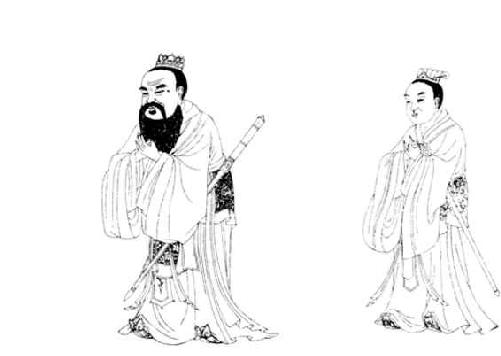
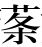
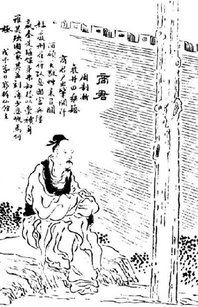

卷六十七 仲尼弟子列传第七
孔子曰“受业身通者七十有七人”，皆异能之士也。德行：颜渊，闵子骞，冉伯牛，仲弓。政事：冉有，季路。言事：宰我，子贡。文学：子游，子夏。师也辟【辟：邪僻。】 ，参也鲁，柴也愚，由也喭【喭：刚勐，卤莽。】 ，回也屡空，赐不受命而货殖焉，亿【亿：猜测。】 则屡中。
孔子之所严事：于周则老子；于卫，蘧伯玉；于齐，晏平仲；于楚，老莱子；于郑，子产；于鲁，孟公绰。数称臧文仲、柳下惠、铜鞮伯华、介山子然，孔子皆后之，不并世。
孔子说“跟着我学习的学生中精通六艺的弟子有七十七人”，他们都是才能出众的人。其中在道德行为方面出众的有：颜渊、闵子骞、冉伯牛、仲弓。擅长行政事务的有：冉有、季路。在言辞口才方面突出的有：宰我、子贡。擅长文献典籍的有：子游、子夏。而颛孙偏激，曾参迟钝，高柴愚笨，仲由粗鲁，颜回经常贫穷，端木赐不接受天命而去经商，但是他预测的行情竟然经常是准确的。
孔子所尊敬和推崇的人：在周朝是老子；在卫国，是蘧伯王；在齐国，是晏平仲；在楚国，是老莱子；在郑国，是子产；在鲁国，是孟公绰。他经常称赞臧文仲、柳下惠、铜鞮伯华、介山子然，孔子的出生时间比他们都晚，不是同一时代的人。
颜回者，鲁人也，字子渊。少孔子三十岁。
颜渊问仁，孔子曰：“克己复礼，天下归仁焉。”
孔子曰：“贤哉回也！一箪【箪：古代用来盛饭食的竹器。】 食，一瓢饮，在陋巷，人不堪其忧，回也不改其乐。”“回也如愚；退而省其私，亦足以发，回也不愚。”“用之则行，舍之则藏，唯我与尔有是夫！”
四子侍坐，选自《孔子圣迹图》。

先圣小像，选自《孔子圣迹图》。
回年二十九，发尽白，蚤死。孔子哭之恸，曰：“自吾有回，门人益亲。”鲁哀公问：“弟子孰为好学？”孔子对曰：“有颜回者好学，不迁怒，不贰过。不幸短命死矣，今也则亡。”
闵损字子骞。少孔子十五岁。
孔子曰：“孝哉闵子骞！人不间于其父母昆弟【昆弟：兄弟。】 之言。”不仕大夫，不食污君之禄。“如有复我者，必在汶上矣。”
冉耕字伯牛。孔子以为有德行。
伯牛有恶疾，孔子往问之，自牖【牖：窗户。】 执其手，曰：“命也夫！斯人也而有斯疾，命也夫！”
冉雍字仲弓。
仲弓问政，孔子曰：“出门如见大宾，使民如承大祭。在邦无怨，在家无怨。”
孔子以仲弓为有德行，曰：“雍也可使南面【南面：指治理诸侯国。】 。”
仲弓父，贱人。孔子曰：“犁牛【犁牛：杂色毛的牛，不能用于祭祀，只能用来耕地。】 之子骍xīng且角【角：指角长得周正。】 ，虽欲勿用，山川其舍诸？”
颜回是鲁国人，字子渊。颜回比孔子小三十岁。
颜渊向孔子询问仁德的含义，孔子说：“约束、克制自己的欲望和言行，使一切言论和行动都归复礼仪制度，那么天下的人都会称道你是有仁德的人了。”
孔子说：“颜回是多么有贤德的人啊！只吃一小竹筐饭，只喝一瓢汤，住在简陋的小巷里，一般人忍受不了这种困苦，颜回却不改变自己向道好学的乐趣。”“颜回在听我授业时，像个愚蠢的人；下课后观察他私下的言行举止，他也能够刻意发挥了，颜回其实不愚蠢。”“任用你的时候，就身体力行；不任用你的时候，就隐藏起来，只有我和你才有这样的处世态度啊！”
颜回在二十九岁那年，头发已经全部变白了，死的时候还很年轻。孔子哭得非常悲伤，说：“自从我有了颜回，学生们对我越来越亲近了。”鲁哀公问：“学生中谁是最好学的？”孔子回答说：“有一个叫颜回的最好学，他从不把怒气转移到别人身上，也不犯同样的错误。不幸的是寿命很短，如今已经没有像他这样的人了。”
闵损，字子骞。闵损比孔子小十五岁。
孔子说：“闵子骞是一个非常孝顺的人啊！他侍奉父母，顺从兄弟，别人在他父母兄弟面前都不能说离间的话。”他不到卿大夫那里做家臣，拒绝季氏的委任。他曾经说：“如果再有人来征召我的话，我一定逃到汶水北面的齐国去。”
冉耕，字伯牛。孔子认为他有德行。
伯牛得了麻风病，孔子前往探望他，在窗户外面握住他的手，说：“这是命运啊！这样的人却得了这样的病，是命运啊！”
冉雍，字仲弓。
仲弓向孔子询问如何处理政事，孔子说：“出门去办事要表现得好像会见贵宾一样谦恭有礼，役使百姓要如同去承办隆重的祭祀一样虔诚谨慎。这样，在诸侯的封国里任职，就没有人怨恨你，在卿大夫的家邑里任职，就没有人怨恨你。”
孔子认为仲弓在道德行为方面有成就，说：“冉雍，可以让他做卿大夫一样的官，独当一面，统领一方。”
仲弓的父亲，是个地位卑贱的人。孔子打比方说：“耕牛所生的小牛长着纯红色的毛，两角长得周正，即使不想把它用作祭品，难道山川的神灵会舍弃它吗？”
冉求字子有，少孔子二十九岁。为季氏宰。
季康子问孔子曰：“冉求仁乎？”曰：“千室之邑，百乘【乘：是指春秋时的战车。】 之家，求也可使治其赋。仁则吾不知也。”复问：“子路仁乎？”孔子对曰：“如求。”
求问曰：“闻斯行诸？”子曰：“行之。”子路问：“闻斯行诸？”子曰：“有父兄在，如之何其闻斯行之！”子华怪之，“敢问问同而答异？”孔子曰：“求也退，故进之。由也兼人，故退之。”
仲由字子路，卞人也。少孔子九岁。
子路性鄙，好勇力，志伉kàng直，冠雄鸡，佩豭jiā豚【豭豚：公猪。古人佩豭豚形象之物，表示勇敢。】 ，陵暴孔子。孔子设礼稍诱子路，子路后儒服委质，因门人请为弟子。
子路问政，孔子曰：“先之，劳之。”请益。曰：“无倦。”
子路问：“君子尚勇乎？”孔子曰：“义之为上。君子好勇而无义则乱，小人好勇而无义则盗。”
子路有闻，未之能行，唯恐有闻。
孔子曰：“片言可以折狱者，其由也与！”“由也好勇过我，无所取材。”“若由也，不得其死然。”“衣敝缊袍【缊袍：以乱麻为絮的长袍。泛指粗劣的冬衣。】 与衣狐貉者立而不耻者，其由也与！”“由也升堂矣，未入于室也。”
季康子问：“仲由仁乎？”孔子曰：“千乘之国可使治其赋，不知其仁。”
子路喜从游，遇长沮、桀溺、荷 丈人。
冉求，字子有，比孔子小二十九岁。曾担任过季孙氏的家宰。
季康子询问孔子说：“冉求称得上仁德吗？”孔子回答说：“拥有千户人家的城邑，拥有百辆兵车的卿大夫之家，可以让冉求去管理那里的兵赋。至于他称不称得上仁德，我就不清楚了。”季康子又问：“子路称得上仁德吗？”孔子回答说：“与冉求一样。”
冉求问孔子说：“事情一经听说就应该马上行动吗？”孔子说：“听到了就行动。”子路问：“事情一经听说就应该马上行动吗？”孔子说：“有父亲、兄长健在，怎么能一听说之后就马上行动呢？”子华对此感到奇怪，说：“我冒昧地问一下，为什么相同的问题却有不同的答案呢？”孔子说：“冉求做事畏缩多虑，所以我要勉励他。仲由做事好胜争强，所以我要抑制他。”
仲由，字子路，是卞地人。仲由比孔子小九岁。
子路生性粗朴，好逞勇斗力，心地刚强直率，头上插戴公鸡的羽毛，身上佩带公猪形的饰物，曾经欺虐过孔子。孔子就施行礼教，逐渐诱导子路，子路后来穿戴儒生的衣帽，带着拜师礼物，通过孔子学生的引荐，请求成为孔子的学生。
子路向孔子询问政事，孔子说：“自己先为百姓做出榜样，然后才能使百姓辛勤地劳作。”子路请求进一步的详细解答。孔子说：“不疲倦地持之以恒。”
子路问：“君子崇尚勇敢吗？”孔子说：“君子最崇尚的是道义。君子只崇尚勇敢而不崇尚道义，就作乱；小人只崇尚勇敢而不崇尚道义，就会做强盗。”
子路听到一件事，还没来不及去做，又唯恐听到另一件事。
孔子说：“只听到片面之词就可以决断案子的，恐怕只有仲由吧！”“仲由崇尚勇敢的精神超过了我之所用，就不适用了。”“像仲由这种性情，不会得到善终。”“穿着用乱麻絮做的破旧的袍子和穿着皮大衣的人站在一起，而不感到羞愧的，恐怕只有仲由吧！”“仲由的学问就好比登上了正厅，可是还没能进入内室。”
季康子问孔子：“仲由有仁德吗？”孔子说：“拥有一千辆兵车的国家，可以让仲由来管理那里的军政事物，至于他有没有仁德，我就不清楚了。”
子路喜欢跟随孔子出游，曾经遇见长沮、桀溺、扛着竹筐的老人家。
子路为季氏宰，季孙问曰：“子路可谓大臣与？”孔子曰：“可谓具臣矣。”
子路为蒲大夫，辞孔子。孔子曰：“蒲多壮士，又难治。然吾语汝：恭以敬，可以执勇；宽以正，可以比众【比众：使众人亲附。】 ；恭正以静，可以报上。”
初，卫灵公有宠姬曰南子。灵公太子蒉kuài聩得过南子，惧诛出奔。及灵公卒而夫人欲立公子郢。郢不肯，曰：“亡人太子之子辄在。”于是卫立辄为君，是为出公。出公立十二年，其父蒉聩居外，不得入。子路为卫大夫孔悝之邑宰。蒉聩乃与孔悝作乱，谋入孔悝家，遂与其徒袭攻出公。出公奔鲁，而蒉聩入立，是为庄公。方孔悝作乱，子路在外，闻之而驰往。遇子羔出卫城门，谓子路曰：“出公去矣，而门已闭，子可还矣，毋空受其祸。”子路曰：“食其食者不避其难。”子羔卒去。有使者入城，城门开，子路随而入。造蒉聩，蒉聩与孔悝登台。子路曰：“君焉用孔悝？请得而杀之。”蒉聩弗听。于是子路欲燔台，蒉聩惧，乃下石乞、壶黡攻子路，击断子路之缨。子路曰：“君子死而冠不免。”遂结缨而死。
孔子闻卫乱，曰：“嗟乎，由死矣！”已而果死。故孔子曰：“自吾得由，恶言不闻于耳。”是时子贡为鲁使于齐。
子路做季孙氏的家宰时，季孙问孔子道：“可以说子路是德才兼备之臣吗？”孔子说：“可以说是后备充数之臣了。”
子路要出任蒲邑大卡，向孔子辞行。孔子说：“蒲邑这个地方有很多勇武之人，又很难治理。然而我告诉你：恭谨和谦敬，就可以驾驭勇武的人；宽厚和清正，可以使百姓亲近；恭谨、清正而社会安静，就可以报效上司了。”
当初，卫灵公有个受宠的姬叫南子。卫灵公的太子蒉聩曾得罪过她，害怕被她谋害就逃到了国外。等到卫灵公死了，而夫人南子想要立公子郢为王。公子郢不肯接受，说：“太子虽然逃亡了，但太子的儿子辄还在国内。”于是卫国立辄为国君，这就是卫出公。卫出公继承王位十二年，他的父亲蒉聩一直居住在国外，不能回来。这时子路担任卫国大夫孔悝的采邑的长官。蒉聩却和孔悝一起作乱，想办法带人进入孔悝家里，就跟他的党徒去袭击卫出公。卫出公逃到了鲁国，蒉聩于是回国即位为王，这就是卫庄公。当孔悝作乱时，子路还在外面办事，听到这个消息后立刻赶了回来。正好遇上子羔从卫国的城门出来，子羔对子路说：“卫出公逃走了，而城门已经关闭，您应该返回，不要白白地为他遭受祸殃。”子路说：“我吃着他的粮食，就不能回避他的危难。”子羔最后还是离开了。正赶上有个使者要进城，城门被打开了，子路就跟着进了城。子路来到蒉聩的住处，正好蒉聩和孔悝登上了孔宅内的高台。子路说：“大王哪里用得上孔悝？请让我把他杀死。”蒉聩不听从他的劝说。于是子路要放火烧台，蒉聩很害怕，就让石乞和壶黡到台下去攻打子路，斩断了子路的帽带。子路说：“君子就是死，也不能让帽子掉下来。”说完系好帽带就死了。
孔子听说卫国发生作乱的事，说：“哎呀，仲由死了！”不久，果真传来仲由的死讯。所以孔子说：“自从我有了仲由，恶言恶语的话再也没有听到过。”这时候子贡正替鲁国到齐国出使。
宰予字子我。利口辩辞。既受业，问：“三年之丧不已久乎？君子三年不为礼，礼必坏；三年不为乐，乐必崩。旧谷既没，新谷既升，钻燧改火【钻燧改火：古时钻木取火，因季节不同而用不同的木材。】 ，期可已矣。”子曰：“于汝安乎？”曰：“安。”“汝安则为之。君子居丧，食旨不甘，闻乐不乐，故弗为也。”宰我出，子曰：“予之不仁也！子生三年然后免于父母之怀。夫三年之丧，天下之通义也。”
宰予昼寝。子曰：“朽木不可雕也，粪土之墙不可圬【圬：抹墙。】 也。”
宰我问五帝之德，子曰：“予非其人也。”
宰我为临菑大夫，与田常作乱【与田常作乱：《左传》记载，在田成子作乱时被杀的是阚止，他的字也是子我。司马迁可能把他误认为宰予了。】 ，以夷其族，孔子耻之。
宰予，字子我。他口齿伶俐，善于言辞。接受孔子教授的学业后，说：“一个人在其父母死后要服丧三年，时间不是太长久了吗？君子三年不习礼仪，礼仪必定会败坏；三年不演奏音乐，音乐必定会荒废。陈粮既然已经吃完，而新谷已经成熟了，取火用的木头已经换过，服丧一年也就可以了。”孔子说：“只守丧一年，你能够心安吗？”宰予回答说：“心安。”孔子说：“你既然感到心安理得，你就这样做吧。君子在服丧期间，即使是吃了美味的食物，也感觉不到甘甜，听到动听的音乐，也感觉不到愉快，所以君子才不这样做。”宰我于是退了出去，孔子说：“宰予不是一个仁人君子啊！孩子生下来三年，才能脱离父母的怀抱。为父母守孝三年，是天下共同遵循的礼仪。”
宰我白天睡觉，孔子说：“无法用腐朽的木头进行雕刻，污秽的墙壁是不能再粉刷了。”宰我询问五帝的德行，孔子说：“你不是问这种问题的人。”
宰我担任齐国临菑的大夫，同大臣田常一起发动叛乱，因此被灭族，孔子对此感到耻辱。
端沐赐，卫人，字子贡。少孔子三十一岁。
子贡利口巧辞，孔子常黜其辩。问曰：“汝与回也孰愈？”对曰：“赐也何敢望回！回也闻一以知十，赐也闻一以知二。”
子贡既已受业，问曰：“赐何人也？”孔子曰：“汝器也。”曰：“何器也？”曰：“瑚hú琏lián也。”
陈子禽问子贡曰：“仲尼焉学？”子贡曰：“文武之道未坠于地，在人，贤者识其大者，不贤者识其小者，莫不有文武之道。夫子不学【不学：指处处学习。】 ，而亦何常师之有！”又问曰：“孔子适是国必闻其政。求之与？抑与之与？”子贡曰：“夫子温良恭俭让以得之。夫子之求之也，其诸异乎人之求之也。”
子贡问曰：“富而无骄，贫而无谄，何如？”孔子曰：“可也；不如贫而乐道，富而好礼。”
端沐赐，是卫国人，字子贡。比孔子小三十一岁。
子贡口齿伶俐，擅长辞辩，孔子经常被他辩得理屈词穷。孔子问子贡：“你和颜回比，谁更强？”子贡回答说：“我哪里敢与颜回相比呢！颜回得知一个道理就能推导出十个道理，我得知一个道理只能推导出两个道理。”
子贡完成学业后，问孔子：“我是一个什么样的人？”孔子说：“你就像是一个器皿。”子贡说：“什么样的器皿？”孔子说：“宗庙祭祀时盛放黍稷的瑚琏。”
陈子禽问子贡说：“仲尼的学问是从哪里学到的？”子贡说：“周文王、周武王的仁义之道并没有完全丢掉，还在人间流传，贤能的人记住了其中的作为主干的大道理，不贤能的人记住了其中细枝末节的小道理，周文王、周武王的仁义之道无处不存在。先生在哪里都能学习，而且哪里又需要固定的老师呢！”陈子禽又问：“孔子到了一个国家，必定知道这个国家的政事。这是请求别人告诉他的？还是别人主动告诉他的呢？”子贡说：“先生是依靠温和、善良、恭谨、俭朴、谦让的美德得来的。先生这种求取方法不同于一般人的求取方法。”
子贡问孔子说：“富裕而不骄纵，贫穷而不谄媚，这样的人怎么样？”孔子说：“行是行；但还是不如虽然贫穷却乐于恪守圣贤之道，虽然富裕却能处事谦恭有礼。”
田常欲作乱于齐，惮高、国、鲍、晏，故移其兵欲以伐鲁。孔子闻之，谓门弟子曰：“夫鲁，坟墓所处，父母之国，国危如此，二三子何为莫出？”子路请出，孔子止之。子张、子石请行，孔子弗许。子贡请行，孔子许之。
遂行，至齐，说田常曰：“君之伐鲁过矣。夫鲁，难伐之国，其城薄以卑，其地狭以泄【其地狭以泄：《越绝书》《吴越春秋》作“其池狭以浅”。】 ，其君愚而不仁，大臣伪而无用，其士民又恶甲兵【甲兵：铠甲和兵器。借指战争。】 之事，此不可与战。君不如伐吴。夫吴，城高以厚，地广以深，甲坚以新，士选以饱，重器【重器：宝器。比喻宝贵的人才。】 精兵尽在其中，又使明大夫守之，此易伐也。”田常忿然作色曰：“子之所难，人之所易；子之所易，人之所难：而以教常，何也？”子贡曰：“臣闻之，忧在内者攻强，忧在外者攻弱。今君忧在内。吾闻君三封而三不成者，大臣有不听者也。今君破鲁以广齐，战胜以骄主，破国以尊臣，而君之功不与焉，则交日疏于主。是君上骄主心，下恣群臣，求以成大事，难矣。夫上骄则恣，臣骄则争，是君上与主有却【却：同“隙”，比喻感情上的裂缝。】 ，下与大臣交争也。如此，则君之立于齐危矣。故曰不如伐吴。伐吴不胜，民人外死，大臣内空，是君上无强臣之敌，下无民人之过，孤主制齐者唯君也。”田常曰：“善。虽然，吾兵业已加鲁矣，去而之吴，大臣疑我，奈何？”子贡曰：“君按兵无伐，臣请往使吴王，令之救鲁而伐齐，君因以兵迎之。”田常许之，使子贡南见吴王。
田常打算在齐国叛乱，却害怕高氏、国氏、鲍氏和晏氏的势力，所以想调动他们的军队去攻打鲁国。孔子听了这个消息，对他门下的弟子说：“鲁国，是祖宗坟墓所在的地方，是养育我们的国家，国家到了如此危险的地步，你们几个人为什么不挺身而出呢？”子路请求前去，孔子阻止了他。子张、子石请求前去，孔子也不答应。子贡请求前去，孔子答应了。
子贡于是出发了，来到齐国，游说田常说：“您攻打鲁国的计划失误了。那鲁国是很难攻打的国家，它的城墙薄而矮，它的护城河窄而浅，它的国君愚昧而且不仁，他的大臣虚伪而且无能，它的士兵和百姓都厌恶打仗，这样的国家不能与它交战。您不如去攻打吴国。吴国，它的城墙高而厚，它的护城河宽而深，士兵的铠甲坚固而崭新，它的战士经过了挑选而人员充足，人才和精良的武器都在其中，又派遣贤明的大臣守卫他，这样的国家是容易攻打的。”田常听了非常愤怒，脸色一变，说：“你认为困难的，是别人认为容易的；你认为容易的，是别人认为困难的。你用这些话来指教我，是什么用心呢？”子贡说：“我听说过这样的话，忧虑来自于国家内部的就攻打强大的国家，忧虑来自于国家外部的就攻打弱小的国家。如今，您的忧虑是来自于国家内部的。我听说您三次求封但三次都没有成功，是因为有的大臣不听从命令。现在，您要攻占鲁国来扩大齐国疆域，如果打胜了，您的国君就会更加骄纵，打败鲁国使得齐国的大臣更加受到尊崇，然而您的功劳却不在其中，那么您和国君的关系就会一天天疏远。这样您对上使国君产生骄纵的心理，对下使群臣放纵无羁，想以此成就大事，太困难了。国君骄纵就会随心所欲，群臣骄妄就会争权夺利，这样对上与国君有矛盾，对下与大臣互相争夺。像这样的话，您在齐国的处境就很危险了。所以说攻打鲁国不如攻打吴国。攻打吴国如果不能取胜，百姓战死在国外，大臣率兵在外作战，国内空虚，这样您在上没有强臣对抗，在下没有百姓责难，能够孤立国君、控制齐国的就只有您了。”田常说：“好。虽然如此，但是我的军队已经开赴鲁国了，现在从鲁国撤离而进兵吴国，大臣们会怀疑我，该怎么办？”子贡说：“您按兵不动，不要发动进攻，我请求出使吴国，让它出兵援助鲁国而攻打齐国，您就趁机出兵迎击它。”田常采纳了子贡的建议，派子贡南下拜见吴王。
说曰：“臣闻之，王者不绝世，霸者无强敌，千钧之重加铢两【铢两：一铢一两。引申为极轻的分量。】 而移。今以万乘之齐而私千乘之鲁，与吴争强，窃为王危之。且夫救鲁，显名也；伐齐，大利也。以抚泗上诸侯，诛暴齐以服强晋，利莫大焉。名存亡鲁，实困强齐。智者不疑也。”吴王曰：“善。虽然，吾尝与越南战争，栖之会稽。越王苦身养士，有报我心。子待我伐越而听子。”子贡曰：“越之劲不过鲁，吴之强不过齐，王置齐而伐越，则齐已平鲁矣。且王方以存亡继绝为名，夫伐小越而畏强齐，非勇也。夫勇者不避难，仁者不穷约，智者不失时，王者不绝世，以立其义。今存越示诸侯以仁，救鲁伐齐，威加晋国，诸侯必相率而朝吴，霸业成矣。且王必恶越，臣请东见越王，令出兵以从，此实空越，名从诸侯以伐也。”吴王大说，乃使子贡之越。
子贡游说吴王说：“我听说，施行王道的国家不能使诸侯国灭绝，施行霸道的国家不能让另外的强大敌人出现，互相抗衡的千钧重量的双方，无论在哪一方加上一铢一两，就会出现重心的移位。现在拥有万辆兵车的齐国企图独自占有拥有千辆兵车的鲁国，来与吴国一争高低，我私下替大王感到危险。况且去救援鲁国，是显扬声名的事情；攻打齐国，是可以获得大利的事情。以此来安抚泗水以北的诸侯，以讨伐强暴的齐国来镇服强大的晋国，没有比这样做而获得更大利益的方法了，名义上保存即将灭亡的鲁国，实际上阻扼了强齐的扩张，聪明的人是不会犹豫不决的。”吴王说：“好。虽然如此，可是我曾经与越国交战，把越王逼退在会稽山上。越王自己吃苦耐劳，而且战士受到优待，有报复我的意图。您等我攻打了越国后再按您的计策去做。”子贡说：“越国的实力还比不上鲁国，吴国的强大也比不上齐国，大王把齐国搁置在一边而去攻打越国，到时齐国早已平定鲁国了。而且大王凭借保存和延续即将灭亡的国家的名义攻打弱小的越国，却害怕强大的齐国，这不是勇敢的表现。勇敢的人不回避艰难险阻，仁慈的人不使受约束的人陷入困境，聪明的人不会失掉时机，称王的人不会让一个国家从世上灭绝，凭借这些来树立他们的道义。现在，通过保存越国来向诸侯显示您的仁德，通过救援鲁国、攻打齐国来给晋国施加压力，各诸侯国一定会竞相来朝见吴国的，这样称霸天下的大业就成功了。大王如果真的畏惧越国，我请求东去会见越王，劝说他出兵追随您，这样做实际上可以使越国空虚，名义上是追随诸侯讨伐齐国。”吴王非常高兴，于是派遣子贡前往越国。
越王除道郊迎，身御至舍而问曰：“此蛮夷之国，大夫何以俨然辱而临之？”子贡曰：“今者吾说吴王以救鲁伐齐，其志欲之而畏越，曰‘待我伐越乃可’。如此，破越必矣。且夫无报人之志而令人疑之，拙也；有报人之志，使人知之，殆也；事未发而先闻，危也。三者举事之大患。”句践顿首再拜曰：“孤尝不料力【料力：量力。】 ，乃与吴战，困于会稽，痛入于骨髓，日夜焦唇干舌，徒欲与吴王接踵而死，孤之愿也。”遂问子贡。子贡曰：“吴王为人勐暴，群臣不堪；国家敝以数战，士卒弗忍；百姓怨上，大臣内变；子胥以谏死，太宰嚭用事，顺君之过以安其私：是残国之治也。今王诚发士卒佐之徼【徼：激发，激励。】 其志，重宝以说其心，卑辞以尊其礼，其伐齐必也。彼战不胜，王之福矣。战胜，必以兵临晋，臣请北见晋君，令共攻之，弱吴必矣。其锐兵尽于齐，重甲困于晋，而王制其敝，此灭吴必矣。”越王大说，许诺。送子贡金百镒，剑一，良矛二。子贡不受，遂行。
越王清扫道路，到郊外迎接子贡，亲自驾车到子贡下榻的馆舍询问道：“这里是不开化的蛮夷小国，大夫为何郑重其事地屈尊光临此地？”子贡说：“现在我已经劝说吴王去救援鲁国而攻打齐国，他心里想要这么做，但担心越国，说‘等我攻下了越国之后才可行’。如果这样，越国被攻克是必然的了。何况没有报复他人的企图而使人怀疑他，是笨拙；有报复他人的企图而让人发觉了，是失败，事情还没有做而消息先传出去，是危险。这三种情况是办事情最大的祸患。”句践伏地叩头拜了两拜，说：“我曾经自不量力，竟和吴国交战，因而被困在会稽山上，对吴国恨入骨髓，早晚唇焦舌干，只打算与吴王一同赴死，这就是我的愿望。”于是询问子贡。子贡说：“吴王为人凶狠残暴，大臣们难以忍受；国家因为频繁的战争而十分疲敝，士兵们无法忍受；百姓怨恨君上，大臣们发生内讧；伍子胥因为直谏而被诛杀，太宰嚭执掌政事，迎合国君的错误，来保存自己的私利：这是国家将要灭亡的政治局面。现在大王如果能出动军队帮助吴王，来鼓舞他的志向，用贵重的宝物来获取他的欢心，用谦卑的辞令来尊崇对他的礼仪，那么他攻打齐国就必定无疑了。如果那场战争不能取胜，就是大王的福气了。如果取得了胜利，他一定会率领部队进逼晋国，请让我北上朝见晋君，劝说他共同攻打吴国，一定能削弱吴国的势力了。吴国的精锐部队全部消耗在齐国，主力部队被牵制在晋国，大王就趁吴国疲惫交困的时候去攻打它，这样一定能灭掉吴国。”越王听了十分高兴，答应按子贡的计策出兵。越王赠送给子贡一百镒黄金，一把剑，两支好矛。子贡没有接受，接着上路了。
报吴王曰：“臣敬以大王之言告越王，越王大恐，曰：‘孤不幸，少失先人，内不自量，抵罪于吴，军败身辱，栖于会稽，国为虚莽【虚莽：丘墟和草莽。指衰败荒芜的地方。】 ，赖大王之赐，使得奉俎豆而修祭祀，死不敢忘，何谋之敢虑！’”后五日，越使大夫种顿首言于吴王曰：“东海役臣孤句践使者臣种，敢修下吏问于左右。今窃闻大王将兴大义，诛强救弱，困暴齐而抚周室，请悉起境内士卒三千人，孤请自被坚执锐，以先受矢石。因越贱臣种奉先人藏器，甲二十领，鈇【鈇：斧。】 屈卢之矛，步光之剑，以贺军吏。”吴王大说，以告子贡曰：“越王欲身从寡人伐齐，可乎？”子贡曰：“不可。夫空人之国，悉人之众，又从其君，不义。君受其币，许其师，而辞其君。”吴王许诺，乃谢越王。于是吴王乃遂发九郡兵伐齐。
子贡回报吴王说：“我郑重地把大王的话告知了越王。越王非常惶恐，说：‘我很不幸运，小时候就失去了父亲，又自不量力，得罪了吴国而获罪，以致军队被打败，自身也受到屈辱，栖息在会稽山上，国家成了荒凉的废墟，幸得大王的恩赐，使我还能够捧着祭品，祭祀祖先，这些恩德我至死也不敢忘怀，怎么还会另有图谋呢！’”五天后，越国派遣大夫文种对吴王伏地叩头说：“东海役使之臣句践派遣使者文种，冒昧上言大王下属向大王致以问候。近来私下听说大王将要振兴大义，派遣大义之师诛伐强暴，拯救弱小，围困残暴的齐国而安抚周王朝，请允许出动越国境内全部军队三千士兵，句践请求亲自披着铠甲、手执锐器，甘愿冒着箭石的危险冲锋陷阵。因此派越国卑贱的臣子文种进献祖先珍藏的宝器，铠甲二十件，鈇钺和屈卢矛、步光剑，用来作贵军官兵的贺礼。”吴王听了非常高兴，把文种的话转告给子贡，说：“越王想亲自跟随我讨伐齐国，可以吗？”子贡说：“不可以。使人家的国内空虚，尽用人家所有人马，又要让人家的国君跟随您出征，这样做不合道义。大王可以接受它的礼物，允许它派出军队，但拒绝它的国君随行。”吴王听从了子贡的意见，就辞谢越王。于是吴王就调动了九个郡的兵力去攻打齐国。
曾国藩：“太史公好奇，凡战国策士诡谋雄辩多着之篇，此载子贡之事特详，亦近战国策士之风。”
子贡因去之晋，谓晋君曰：“臣闻之，虑不先定不可以应卒，兵不先辨不可以胜敌。今夫齐与吴将战，彼战而不胜，越乱之必矣；与齐战而胜，必以其兵临晋。”晋君大恐，曰：“为之奈何？”子贡曰：“修兵休卒以待之。”晋君许诺。
子贡去而之鲁。吴王果与齐人战于艾陵，大破齐师，获七将军之兵而不归，果以兵临晋，与晋人相遇黄池之上。吴晋争强。晋人击之，大败吴师。越王闻之，涉江袭吴，去城七里而军。吴王闻之，去晋而归，与越南战争于五湖【五湖：指太湖。】 。三战不胜，城门不守，越遂围王宫，杀夫差而戮其相。破吴三年，东向而霸。
故子贡一出，存鲁，乱齐，破吴，强晋而霸越。子贡一使，使势相破，十年之中，五国各有变。
子贡好废举，与时转货赀。喜扬人之美，不能匿人之过。常相鲁卫，家累千金，卒终于齐。
子贡便离开吴国前往晋国，对晋君说；“我听说，不事先谋划好计策，就不能应付仓猝的变故，不事先治理好军队就不能够战胜敌人。现在齐国与吴国即将开战，如果齐国打败了吴国，越国一定会趁机扰乱吴国；如果吴国战胜了齐国，吴国一定会率领它的部队逼近晋国边境。”晋君非常恐慌，说：“那该如何是好？”子贡说：“整理好兵器，休养士卒，等着吴军到来。”晋君答应了。
子贡离开晋国前往鲁国。吴王果然与齐国军队在艾陵作战，把齐国军队打得大败，俘虏了七个将军的兵马，而不肯班师回国，接着率领军队逼近晋国边境，与晋国人在黄池相遇。吴国和晋国双方争强斗胜。晋军攻击吴军，大败吴军。越王听到这个消息后，于是渡江去袭击吴国，一直打到距离吴国都城七里远的地方才安营扎寨。吴王听到这个消息，立刻离开晋国返回吴国，与越军在五湖一带作战。吴军三次交战都失败了，结果城门失守，越军就包围了王宫，杀了吴王夫差和他的相国。灭掉吴国三年后，越国在东方称霸了。
所以子贡这一次出使，保存了鲁国，扰乱了齐国，灭掉了吴国，使晋国强盛而使越国称霸。子贡一次出使，打破了各国旧有的局势，十年之中，齐、鲁、吴、晋、越五个国家的局势都发生了重大变化。
子贡喜好经商，贱买贵卖，根据时机随时转换货物资财。他喜欢褒扬别人的优点，不能隐瞒别人的过失。他曾经担任过鲁国和卫国的傧相，家财累积达到千金，最后死在齐国。
言偃，吴人，字子游。少孔子四十五岁。
子游既已受业，为武城宰。孔子过，闻弦歌之声。孔子莞尔【莞尔：微笑。】 而笑曰：“割鸡焉用牛刀？”子游曰：“昔者偃闻诸夫子曰，君子学道则爱人，小人学道则易使。”孔子曰：“二三子【二三子：指随从者。】 ，偃之言是也。前言戏之耳。”孔子以为子游习于文学。
卜商字子夏。少孔子四十四岁。
子夏问：“‘巧笑倩兮，美目盼兮，素以为绚兮’，何谓也？”子曰：“绘事后素【绘事后素：郑玄注曰：绘，画文也，凡绘画，先布众色，然后以素分布其间，以成其文，喻美女虽有倩盼美质，亦须以礼成之。】 。”曰：“礼后乎？”孔子曰：“商始可与言《诗》已矣。”
子贡问：“师与商孰贤？”子曰：“师也过，商也不及。”“然则师愈与？”曰：“过犹不及。”
子谓子夏曰：“汝为君子儒，无为小人儒。”
孔子既没，子夏居西河教授，为魏文侯师。其子死，哭之失明。
言偃是吴国人，字子游。言偃比孔子小四十五岁。
子游完成学业以后，出任武城的长官。孔子路过武城时，听到弹奏管弦演唱诗歌的声音。孔子微笑着说：“杀鸡何必用宰牛的刀呢？”子游说：“从前我听先生说过：‘君子学习了礼乐之道，就会爱护他人；小人学习了礼乐之道，就容易被役使。”孔子说：“学生们，言偃的话说得很对。先前我说的话只是开个玩笑而已。”孔子认为子游熟悉文献典籍。
卜商，字子夏。卜商比孔子小四十四岁。
子夏问：“‘姣美的笑容酒窝深深多好看啊，美丽的眼睛黑白分明多明澈啊，仿佛洁白的生绢染上了华丽多彩的图画’这三句诗说的是什么意思？”孔子说；“绘画这事情，要先施五彩，然后才上白色。”子夏说：“是不是礼仪也是产生在仁义之后的事情？”孔子说：“卜商，现在可以和你讨论《诗》了。”
子贡问：“颛孙师与卜商谁更贤能？”孔子说：“颛孙师做事有些过头了，卜商做事达不到要求。”子贡说：“这样就是颛孙师强一些吧？”孔子说：“做事过头和达不到要求同样是不完美的。”
孔子对子夏说：“你要做一个有才德的读书人，不要做一个浅薄不正派的读书人。”
孔子死后，子夏住在西河教授学业，担任魏文侯的老师。他的儿子死了，他因此将眼睛哭瞎了。
颛孙师，陈人，字子张。少孔子四十八岁。
子张问干禄【干禄：求取禄位。】 ，孔子曰：“多闻阙疑，慎言其余，则寡尤【寡尤：少犯错误。】 ；多见阙殆，慎行其余，则寡悔。言寡尤，行寡悔，禄在其中矣。”
他日从在陈蔡间，困，问行。孔子曰：“言忠信，行笃敬，虽蛮貊【蛮貊：古代称南方和北方落后部族。】 之国行也；言不忠信，行不笃敬，虽州里行乎哉！立则见其参于前也，在舆则见其倚于衡【衡：车辕前端的横木。】 ，夫然后行。”子张书诸绅【绅：古代士大夫束腰的大带子。】 。
子张问：“士何如斯可谓之达矣？”孔子曰：“何哉，尔所谓达者？”子张对曰：“在国必闻，在家必闻。”孔子曰：“是闻也，非达也。夫达者，质直而好义，察言而观色，虑以下人，在国及家必达。夫闻也者，色取仁而行违，居之不疑，在国及家必闻。”
曾参，南武城人，字子舆。少孔子四十六岁。
孔子以为能通孝道，故授之业。作《孝经》。死于鲁。
澹台灭明，武城人，字子羽。少孔子三十九岁。
状貌甚恶。欲事孔子，孔子以为材薄。既已受业，退而修行，行不由径，非公事不见卿大夫。
南游至江，从弟子三百人，设取予去就，名施乎诸侯。孔子闻之，曰：“吾以言取人，失之宰予；以貌取人，失之子羽。”
颛孙师是陈国人，字子张。颛孙师比孔子小四十八岁。
子张询问如何谋取官职获得俸禄，孔子说：“多听，对疑惑未解的问题，要保留在心中，不要妄加评论，对其余有把握的问题，要谨慎地谈论，就可以少犯错误；多看，对疑惑未解的问题，要保留在心中，不要妄加评论，对其余有把握的事情，要谨慎地施行，就可以减少悔恨。言语少过失，行为少悔恨，那么官职俸禄就在这里面了。”
有一天，子张跟随孔子在陈、蔡两国之间被围困了，子张询问如何才能行得通。孔子说：“说话要忠实可信，行为要厚道恭敬，即使在偏远的异族他乡，也是行得通的；说话不忠实诚信，行为不厚道恭敬，即使在本乡本土，也行不通啊！站着的时候，就仿佛看见‘忠信笃敬’几个字并列摆在面前；坐车的时候，就仿佛看见‘忠信笃敬’几个字挂在车前的横木上。做到这种地步，就能处处都行得通了。”子张就把这些话写在束腰的衣带上。
子张问：“读书人怎样做才称得上是通达了呢？”孔子说：“你所说的通达，指的是什么意思呢？”子张回答说：“在诸侯国中必定闻名，在大夫家中也必定闻名。”孔子说：“这是闻，不是通达。所谓通达的人，应该质朴、正直，而且还爱好道义，善于审度别人的言论，观察别人的表情，时常想着谦恭退让。这种人无论是在诸侯国中，还是在大夫家里一定能通达。而至于闻者，表面上好象追求仁德的样子，而实际行动上却违背仁德，以仁自居，并且心安理得，深信不疑，这种人无论是在诸侯国中，还是在大夫家里一定能取得名望。”
曾参是南武城人，字子舆。曾参比孔子小四十六岁。
孔子认为曾参能够通晓孝顺的道理，所以传授他学业，曾参写了一部《孝经》。曾参最后死在鲁国。
澹台灭明是武城人，字子羽。澹台灭明比孔子小三十九岁。
澹台灭明的长相非常丑陋。他想拜孔子为师，但孔子认为他资质低下。他的学业结束以后，回到家中修身实践，做事从不走邪门歪道，没有公事，就不去拜见卿大夫。
他南下游历到长江，跟随他的弟子有三百人，他为人处事取舍进退公正无私，名声在诸侯国中传扬。孔子听到这些情况以后，说：“我凭借言辞来判断人，对宰予的判断就错了；凭借相貌来判断人，对子羽的判断就错了。”
宓不齐字子贱。少孔子三十岁。
孔子谓子贱：“君子哉！鲁无君子，斯焉取斯？”
子贱为单父宰，反命【反命：复命。】 于孔子，曰：“此国有贤不齐者五人，教不齐所以治者。”孔子曰：“惜哉不齐所治者小，所治者大则庶几矣。”
原宪字子思。
子思问耻。孔子曰：“国有道，谷【谷：指俸禄。】 。国无道，谷，耻也。”
子思曰：“克伐怨欲不行焉，可以为仁乎？”孔子曰：“可以为难矣，仁则吾弗知也。”
孔子卒，原宪遂亡在草泽中。子贡相卫，而结驷【结驷：四匹马拉一辆车。】 连骑，排藜lí藿huò入穷阎，过谢原宪。宪摄敝衣冠见子贡。子贡耻之，曰：“夫子岂病乎？”原宪曰：“吾闻之，无财者谓之贫，学道而不能行者谓之病。若宪，贫也，非病也。”子贡惭，不怿而去，终身耻其言之过也。
宓不齐，字子贱。宓不齐比孔子小三十岁。
孔子评论子贱说：“真是君子啊！如果鲁国没有君子的话，这个人从哪里学到君子的德行的呢？”
子贱出任单父的长官后，向孔子复命说：“这个地方有五个人比我贤明，他们教给我治理都邑的方法。”孔子说：“可惜啊！你所治理的地方太小了，如果治理的地方大些，那就差不多了。”
原宪，字子思。
子思向孔子询问什么叫作耻辱。孔子说：“国家政治清明，做官领取俸禄，却无所建树。国家政治黑暗，也做官领取俸禄，这就是耻辱。”
子思说：“争强好胜、自我夸耀、怨天尤人、贪得无厌都没有显现出来，可以称得上仁吗？”孔子说：“做到这个地步可以说是难能可贵了，至于是否称得上是仁，那我就不知道了。”
孔子死后，原宪就跑到荒郊野外中隐居。子贡做了卫国的相国，驾着多辆四匹马拉的车，拨开高过人头的野草，进入偏远简陋的小屋，探望问候原宪。原宪整理好所穿戴的破旧的衣帽会见子贡。子贡替他感到羞耻，说：“您难道不感到耻辱吗？”原宪说：“我听说，没有财产叫作贫穷，学了道理而不能施行叫作困顿。像我这样，是贫穷，而不是困顿。”子贡感到惭愧，不高兴地离开了，一辈子都为这次说错了话而感到羞耻。
公冶长，齐人，字子长。
孔子曰：“长可妻也，虽在累绁【累绁：缚犯人的绳索，借指拘禁。】 之中，非其罪也。”以其子妻之。
南宫括字子容。
问孔子曰：“羿善射，奡荡舟【荡舟：用战船冲锋陷阵。】 ，俱不得其死然；禹稷躬稼而有天下？”孔子弗答。容出，孔子曰：“君子哉若人！上德哉若人！”“国有道，不废；国无道，免于刑戮。”三复“白圭之玷”，以其兄之子妻之。
公皙哀字季次。
孔子曰：“天下无行，多为家臣，仕于都；唯季次未尝仕。”
曾蒧diǎn字皙。
侍孔子，孔子曰：“言尔志。”蒧曰：“春服既成，冠者五六人，童子六七人，浴乎沂，风乎舞雩，咏而归。”孔子喟尔叹曰：“吾与蒧也！”
公冶长，齐国人，字子长。
孔子说：“公冶长，是值得把女儿嫁给他的一个人，虽然他曾经被关押在监狱中，但这并不是他的罪过。”孔子于是就把自己的女儿嫁给了他。
南宫括，字子容。
南宫括问孔子道：“羿擅长射箭，奡擅长行船，但他们都没有得到善终；为什么禹和稷亲自耕种却能够得到天下？”孔子没有回答他。子容出去以后，孔子说：“这个人是个君子啊！这个人崇尚德行啊！”孔子又说：“国家政治清明，他会被任用；国家政治黑暗，他不会遭受刑罚、杀戮。”子容经常诵读“白圭之玷”的诗句，于是孔子把他的兄长的女儿嫁给了他。
公皙哀，字季次。
孔子说：“天下的士人没有德行，他们大多数成了卿大夫们的家臣，在都城里做官；只有季次不曾做官。”
曾蒧，字皙。
曾蒧侍奉孔子，孔子说：“说说你的志向。”曾蒧说：“当能穿着春服的时候，我和五六个成年人，六七个小孩子，在沂水里洗洗澡，在舞雩台上吹吹风，然后唱着歌回家。”孔子叹了一口气说：“我赞成曾蒧的志向啊！”
颜无繇字路。路者，颜回父，父子尝各异时事孔子。
颜回死，颜路贫，请孔子车以葬【车以葬：指用卖掉车子的钱安葬。】 。孔子曰：“材不材，亦各言其子也。鲤也死，有棺而无椁，吾不徒行以为之椁，以吾从大夫之后，不可以徒行。”
商瞿，鲁人，字子木。少孔子二十九岁。
孔子传《易》于瞿，瞿传楚人馯臂子弘，弘传江东人矫子庸疵，疵传燕人周子家竖，竖传淳于人光子乘羽，羽传齐人田子庄何，何传东武人王子中同，同传菑川人杨何。何元朔中以治《易》为汉中大夫。
高柴字子羔。少孔子三十岁。
子羔长不盈五尺，受业孔子，孔子以为愚。
子路使子羔为费郈宰，孔子曰：“贼【贼：残害。】 夫人之子！”子路曰：“有民人焉，有社稷焉，何必读书然后为学！”孔子曰：“是故恶夫佞者。”
漆雕开字子开。
孔子使开仕，对曰：“吾斯之未能信。”孔子说。
公伯缭字子周。
周诉【诉：同“诉”，这里指说坏话。】 子路于季孙，子服景伯以告孔子，曰：“夫子固有惑志，缭也吾力犹能肆【肆：古代指人处死刑后暴尸示众。】 诸市朝。”孔子曰：“道之将行，命也；道之将废，命也。公伯缭其如命何！”
颜无繇，字路。颜路，是颜回的父亲，父子曾经先后在不同的时间里在孔子门下求学。
颜回死的时候，颜路非常贫穷，请求孔子把车子卖掉来安葬颜回。孔子说：“不管孔鲤有没有才能，说起来，都是自己的孩子。鲤儿死的时候，只有内棺，没有外椁，我不能卖了车子而步行去给他买外椁，因为我曾经位居大夫，所以是不可能徒步行走的。”
商瞿，是鲁国人，字子木。商瞿比孔子小二十九岁。
孔子把《周易》传授给商瞿，商瞿传给楚国人馯臂子弘，馯臂子弘传授给江东人矫子庸疵，矫子庸疵传授给燕国人周子家竖，周子家竖传授给淳于人光子乘羽，光子乘羽传授给齐国人田子庄何，田子庄何传授给东武人王子中同，王子中同传授给菑川人杨何。杨何在汉武帝元朔年间因为研究《周易》做了汉朝的中大夫。
高柴，字子羔。高柴比孔子小三十岁。
子羔身高不足五尺，师从孔子接受学业，孔子认为他很愚笨。
子路派子羔担任费邑和郈邑的长官，孔子说：“这是在残害人家的子弟！”子路说：“那里有百姓，那里有土神和谷神可以祭祀，为什么一定要说读书才算是做学问呢！”孔子说：“所以我讨厌那些用花言巧语诡辩的人。”
漆雕开，字子开。
孔子让子开去做官，子开回答说：“我对做官还没有信心。”孔子听到后非常高兴。
公伯缭，字子周。
子周在季孙氏面前毁谤子路，子服景伯将此事告知给孔子，说：“季孙氏他老人家原本就对子路产生了怀疑，对于公伯缭，我还是有力量杀死他的，把他的尸体放在街头示众。”孔子说：“仁义之道能够行得通，那是天意；仁义之道将要被废弃，那也是天意。公伯缭能把天意怎么样呢！”
司马耕字子牛。
牛多言而躁。问仁于孔子，孔子曰：“仁者其言也讱【讱：说话缓慢谨慎。】 。”曰：“其言也讱，斯可谓之仁乎？”子曰：“为之难，言之得无讱乎！”
问君子，子曰：“君子不忧不惧。”曰：“不忧不惧，斯可谓之君子乎？”子曰：“内省不疚，夫何忧何惧！”
樊须字子迟。少孔子三十六岁。
樊迟请学稼【稼：种植五谷。】 ，孔子曰：“吾不如老农。”请学圃【圃：种植蔬菜。】 ，曰：“吾不如老圃。”樊迟出，孔子曰：“小人哉樊须也！上好礼，则民莫敢不敬；上好义，则民莫敢不服；上好信，则民莫敢不用情。夫如是，则四方之民襁负其子而至矣，焉用稼！”
樊迟问仁，子曰：“爱人。”问智，曰：“知人。”
有若少孔子四十三岁。有若曰：“礼之用，和为贵，先王之道斯为美。小大由之，有所不行；知和而和，不以礼节之，亦不可行也。”“信近于义，言可复也；恭近于礼，远耻辱也；因【因：亲，亲近。】 不失其亲，亦可宗也。”
孔子既没，弟子思慕，有若状似孔子，弟子相与共立为师，师之如夫子时也。他日，弟子进问曰：“昔夫子当行，使弟子持雨具，已而果雨。弟子问曰：‘夫子何以知之？’夫子曰：‘《诗》不云乎？“月离于毕，俾滂沱矣。”昨暮月不宿毕乎？’他日，月宿毕，竟不雨。商瞿年长无子，其母为取室。孔子使之齐，瞿母请之。孔子曰：‘无忧，瞿年四十后当有五丈夫子。’已而果然。敢问夫子何以知此？”有若默然无以应。弟子起曰：“有子避之，此非子之座也！”
司马耕，字子牛。
子牛话多而且急躁。他问孔子什么是仁德，孔子说：“一个有仁德的人，他说话很谨慎。”子牛说：“说话谨慎，就可以算是有仁德吗？”孔子说：“实行起来很困难，说起来能不谨慎吗！”
子牛询问怎样才算是君子，孔子说：“君子不忧愁，不畏惧。”子牛说：“不忧愁，不畏惧，这样就能称之为君子吗？”孔子说：“做到问心无愧了，有什么值得忧愁，有什么值得畏惧呢！”
樊须，字子迟。樊须比孔子小三十六岁。
樊须向孔子请教如何种庄稼，孔子说：“我在这方面不如老农。”樊须又请教如何种菜，孔子说：“我在这方面不如菜农。”在樊迟退出后，孔子说：“樊须是个志向浅薄的小人啊！统治者提倡礼仪，那么老百姓就没有人敢不尊敬他；统治者仁义有理，那么老百姓就没有人敢不服从他；统治者诚恳守信，那么老百姓就没有人敢不真心实意地对待他。像这样的话，那么四面八方的百姓都会背着他们的子女来归顺了，哪里需要自己去种庄稼！”
樊须向孔子询问什么是仁德，孔子说：“仁德就是爱护别人。”樊须又问什么是智慧，孔子说：“智慧就是能够了解别人。”
有若比孔子小四十三岁。有若说：“礼的应用，以恰到好处最为可贵。在已故君王的治国之道中，这是其中最高明的地方。但无论大事小事都照这条原则办理，有时也有行不通的地方；只知道和谐的重要而一味地追求和谐，而不用礼去节制它，也是行不通的。”有若又说：“遵守信约要符合道义，这样说出的话才能经得起实践的检验；恭敬要符合礼仪，这样才能避免耻辱；有仰仗而没有失去自己的亲族，也就值得尊崇了。”
孔子死后，学生们都很怀念他，因为有若长得像孔子，学生们共同拥戴他为老师，如同孔子在世时那样对待他。有一天，学生们提出疑问说：“从前孔夫子在出行时，让学生们带上雨具，不久果真下雨了。学生们问道：‘先生是依据什么得知会下雨的？’先生说：‘《诗》上不是这样说吗？“月亮靠近毕宿，接着就会下大雨了。”昨天晚上月亮不就是停留在毕宿的位置上吗？’有一天，月亮停留在毕宿，结果没有下雨。商瞿的年纪很大了但仍然没有孩子，他的母亲要为他另娶妻室。孔子派商瞿前往齐国去，商瞿的母亲向孔子请求暂时不要派商瞿去齐国。孔子说：‘不用担心，商瞿四十岁后会有五个儿子。’后来果然如此。请问先生依据什么知道会这样？”有若沉默着，无话可答。学生们起来说：“有先生，您躲开点吧，这个位置不是您能坐的！”
公西赤字子华。少孔子四十二岁。
子华使于齐，冉有为其母请粟。孔子曰：“与之釜【釜：古代容量单位。六斗死升为一釜。】 。”请益，曰：“与之庾【庾：古代容量单位。十六斗为一庾。】 。”冉子与之粟五秉【秉：古代容量单位。十六斛为一秉。】 。孔子曰：“赤之适齐也，乘肥马，衣轻裘。吾闻君子周急不继富。”
巫马施字子旗。少孔子三十岁。
陈司败【司败：官名，即司寇。】 问孔子曰：“鲁昭公知礼乎？”孔子曰：“知礼。”退而揖巫马旗曰：“吾闻君子不党，君子亦党乎？鲁君娶吴女为夫人，命之为孟子。孟子姓姬，讳称同姓，故谓之孟子。鲁君而知礼，孰不知礼！”施以告孔子，孔子曰：“丘也幸，苟有过，人必知之。臣不可言君亲之恶，为讳者，礼也。”
梁鳣字叔鱼。少孔子二十九岁。
颜幸字子柳。少孔子四十六岁。
冉孺字子鲁，少孔子五十岁。
曹恤字子循。少孔子五十岁。
伯虔字子析，少孔子五十岁。
公孙龙字子石。少孔子五十三岁。
公西赤，字子华。公西赤比孔子小四十二岁。
子华出使到了齐国，冉有替他的母亲向孔子请求给些小米。孔子说：“给她一釜。”冉有请求增加，孔子说：“给他一庾。”结果冉有给了她五秉小米。孔子说：“公西赤前往齐国的时候，乘坐的是肥马拉的车，穿着轻暖的皮衣。我听说君子应该救济有紧急需要的人，而不应该接济富人。”
巫马施，字子旗。巫马施比孔子小三十岁。
陈司败询问孔子道：“鲁昭公懂得礼节吗？”孔子说：“懂礼。”孔子出去以后，陈司败向巫马施作了揖，说：“我听说君子不偏私袒护任何人，莫非君子也会偏私袒护别人吗？鲁君娶了吴国的女子做夫人，给她起名叫孟子。孟子本姓姬，忌讳以同姓相称，所以叫她孟子。如果鲁君懂得礼节，那还有谁不懂得礼节呢！”巫马施把陈司败的话告诉给孔子，孔子说：“我孔丘真是幸运，如果有了过失，别人一定会使我知道。作为臣下和人子，不能说君上和父亲的过错，为他们避讳的人，才是懂礼。”
梁鳣，字叔鱼，比孔子小二十九岁。
颜幸，字子柳，比孔子小四十六岁。
冉孺，字子鲁，比孔子小五十岁。
曹恤，字子循，比孔子小五十岁。
伯虔，字子析，比孔子小五十岁。
公孙龙，字子石，比孔子小五十三岁。
自子石已右三十五人，显有年名及受业，闻见于书传。其四十有二人，无年及不见书传者纪于左：
冉季字子产。
公祖句兹字子之。
秦祖字子南。
漆雕哆字子敛。
颜高字子骄。
漆雕徒父。
壤驷赤字子徒。
商泽。
石作蜀字子明。
任不齐字选。
公良孺字子正。
后处字子里。
秦冉字开。
公夏首字乘。
傒容箴字子皙。
公肩定字子中。
颜祖字襄。
鄡单字子家。
句井疆。
罕父黑字子索。
秦商字子丕。
申党字周。
颜之仆字叔。
荣旗字子祈。
县成字子祺。
左人郢字行。
燕伋字思。
郑国字子徒。
秦非字子之。
施之常字子恒。
颜哙字子声。
步叔乘字子车。
原亢字籍。
乐欬字子声。
廉絜字庸。
叔仲会字子期。
颜何字冉。
狄黑字皙。
邦巽字子敛。
孔忠。
公西舆如字子上。
公西葴字子上。
从子石以上共三十五人，他们的年龄、姓名以及受业情况明确地见于文献记载。其余四十二人，没有年龄以及不见于文献记载的，著录在下面：
冉季，字子产。
公祖句兹，字子之。
秦祖，字子南。
漆雕哆，字子敛。
颜高，字子骄。
漆雕徒父。
壤驷赤，字子徒。
商泽。
石作蜀，宇子明。
任不齐，字选。
公良孺，字子正。
后处，字子里。
秦冉，字开。
公夏首，字乘。
傒容箴，字子皙。
公肩定，字子中。
颜祖，字襄。
鄡单，字子家。
句井疆。
罕父黑，字子索。
秦商，字子丕。
申党，字周。
颜之仆，字叔。
荣旗，字子祈。
县成，字子祺。
左人郢，字行。
燕伋，字思。
郑国，字子徒。
秦非，字子之。
施之常，字子恒。
颜哙，字子声。
步叔乘，字子车。
原亢籍。
乐欬，字子声。
廉絜，字庸。
叔仲会，字子期。
颜何，字冉。
狄黑，字皙。
邦巽，字子敛。
孔忠。
公西舆如，字子上。
公西葴，字子上。
太史公曰：学者多称七十子之徒，誉者或过其实，毁者或损其真，钧之未睹厥容貌，则论言弟子籍，出孔氏古文近是。余以弟子名姓文字悉取《论语》弟子问并次为篇，疑者阙焉。
太史公说：在后世学者中有很多人都称述孔子的七十个门徒，在称誉他们的人之中，有的言过其实；在毁谤他们的人之中，有的损害了他们的真实形象，但谁都没有见到过他们的真实相貌，议论和说明孔子门徒事迹的材料，来自孔氏古文中的才比较符合实际情况。我收集有关孔子弟子的姓名、言行等情况全都取自《论语》中的弟子问答，把它们编排成一篇，有疑问的地方就空缺着。
卷六十八 商君列传第八
商君者，卫之诸庶孽公子也，名鞅，姓公孙氏，其祖本姬姓也。鞅少好刑名之学，事魏相公叔座为中庶子【中庶子：官名，战国时为掌管公族事务的官。】 。公叔座知其贤，未及进。会座病，魏惠王亲往问病，曰：“公叔病有如不可讳，将奈社稷何？”公叔曰：“座之中庶子公孙鞅，年虽少，有奇才，愿王举国而听之。”王嘿然【嘿然：沉默不语。】 。王且去，座屏人言曰：“王即不听用鞅，必杀之，无令出境。”王许诺而去。公叔座召鞅谢曰：“今者王问可以为相者，我言若，王色不许我。我方先君后臣，因谓王即弗用鞅，当杀之。王许我。汝可疾去矣，且见禽。”鞅曰：“彼王不能用君之言任臣，又安能用君之言杀臣乎？”卒不去。惠王既去，而谓左右曰：“公叔病甚，悲乎，欲令寡人以国听公孙鞅也，岂不悖哉！”
商君，是卫国的庶出公子之一，名叫鞅，姓公孙氏，他的祖先原本姓姬。公孙鞅年少时喜好刑名法术之学，事奉魏国相国公叔座，担任中庶子。公叔座知道他很有才干，还没来得及向魏王推荐。正巧遇上公叔座病重，魏惠王亲自来探望他，说：“您得病，倘若有个三长两短，国家将怎么办呢？”公叔座回答说：“我的中庶子公孙鞅，年纪虽然不大，却身怀奇才，希望大王能把全部国政都交付给他，让他去治理。”魏惠王听了以后沉默无语。当魏惠王打算离去时，公叔座屏退两旁的随侍人员，说：“大王如果不起用公孙鞅，就一定要杀掉他，不能让他走出国境。”魏王一口应承之后就离去了。公叔座召来公孙鞅，对他说：“今日大王询问可以担任相国的人选，我推荐了你。看大王的神情知道他不同意我的意见。我应当先忠于国君，然后才考虑臣下的立场，便对大王说，如果不任用公孙鞅，就应该杀掉他。大王答应了我的请求。你可以赶紧离开了，否则的话，马上就要被逮捕了。”公孙鞅说：“大王既然不采纳您的话任用我，又怎么会采纳您的话来杀我呢？”结果没有离开魏国。魏惠王离开后，对身边的人说：“公叔座病得很严重，真让人悲伤啊，他想要我把国政全部交付给公孙鞅掌管，这岂不是很煳涂！”
公叔既死，公孙鞅闻秦孝公下令国中求贤者，将修缪公之业，东复侵地，乃遂西入秦，因孝公宠臣景监以求见孝公。孝公既见卫鞅，语事良久，孝公时时睡，弗听。罢而孝公怒景监曰：“子之客妄人耳，安足用邪！”景监以让卫鞅。卫鞅曰：“吾说公以帝道【帝道：指理想的帝王治国之道，即尧、舜等五帝的治国之道。】 ，其志不开悟矣。”后五日，复求见鞅。鞅复见孝公，益愈，然而未中旨。罢而孝公复让【让：责备。】 景监，景监亦让鞅。鞅曰：“吾说公以王道而未入也。请复见鞅。”鞅复见孝公，孝公善之而未用也。罢而去。孝公谓景监曰：“汝客善，可与语矣。”鞅曰：“吾说公以霸道，其意欲用之矣。诚复见我，我知之矣。”卫鞅复见孝公。公与语，不自知膝之前于席也。语数日不厌。景监曰：“子何以中吾君？吾君之欢甚也。”鞅曰：“吾说君以帝王之道比三代，而君曰：‘久远，吾不能待。且贤君者，各及其身显名天下，安能邑邑待数十百年以成帝王乎？’故吾以强国之术说君，君大说之耳。然亦难以比德于殷周矣。”
公叔座死后不久，公孙鞅听说秦孝公在国中下令寻求有才能的人，准备重建秦缪公时代的霸业，向东要收复被魏国侵占的土地，他就西行进入秦国，通过秦孝公的宠臣景监求见孝公。秦孝公立即召见卫鞅，同他说了很长时间的政事，孝公一边听一边打瞌睡，一点也没有听进去。谈完后秦孝公对景监发怒，说：“你的那位客人只是一个无知狂妄的人而已，这种人哪里配被任用！”景监又用秦孝公的话责备卫鞅。卫鞅说：“我用尧、舜等五帝的治国之道来劝说大王，他的心志不能领会啊。”过了五天之后，景监又向秦孝公请求召见卫鞅。卫鞅再次觐见秦孝公，所说的治国之道比前一次更多，然而还是不合秦孝公的心意。谈完后秦孝公又责备景监，景监也责备卫鞅。卫鞅说：“我用三国之道劝说大王，但他听不进去。请求他再次召见我。”卫鞅再一次觐见秦孝公，孝公对卫鞅很友好，可是没有任用他。谈完后卫鞅离去了，孝公对景监说：“你的那位客人不错，我可以和他交谈了。”景监告诉卫鞅，卫鞅说：“我用春秋五霸的治国方法去劝说大王，看他的心思是准备采纳了。如果再召见我，我就知道该说些什么了。”于是卫鞅果然再次见到了秦孝公，孝公与他谈得非常投机，膝盖不知不觉地在垫席上往前挪动。谈了好几天也没有满足。景监对卫鞅说：“您依据什么掌握了大王的心意？我们国君非常高兴。”卫鞅回答说：“我用帝王之道创建了夏、商、周那样的盛世来劝说国君，可是大王说：‘时间太长了，我无法等待。况且贤能的君主，谁不希望自己在位的时候就能名扬天下，哪里能默默无闻地等上几十年、几百年来成就帝王大业呢？’所以，我就用强国之术来劝说他，他才大为高兴。但是，这样就难以与殷、周的德治相媲美了。”
孝公既用卫鞅，鞅欲变法，恐天下议己。卫鞅曰：“疑行无名，疑事无功。且夫有高人之行者，固见非于世；有独知之虑者，必见敖于民。愚者暗于成事，知者见于未萌。民不可与虑始而可与乐成。论至德者不和于俗，成大功者不谋于众。是以圣人苟可以强国，不法其故；苟可以利民，不循其礼。”孝公曰：“善。”甘龙曰：“不然。圣人不易民而教，知者不变法而治。因民而教，不劳而成功；缘法【缘法：沿用成法。】 而治者，吏习而民安之。”卫鞅曰：“龙之所言，世俗之言也。常人安于故俗，学者溺于所闻。以此两者居官守法可也，非所与论于法之外也。三代不同礼而王，五伯【五伯：指春秋五霸。】 不同法而霸。智者作法，愚者制焉；贤者更礼，不肖者拘焉。”杜挚曰：“利不百，不变法；功不十，不易器。法古无过，循礼无邪。”卫鞅曰：“治世不一道，便国不法古。故汤武不循古而王，夏殷不易礼而亡。反古者不可非，而循礼者不足多。”孝公曰：“善。”以卫鞅为左庶长，卒定变法之令。

商君，选自《东周列国志》。
秦孝公任用卫鞅后不久，卫鞅打算变更法度，但秦孝公担心天下人非议自己。卫鞅说：“行动犹豫不决就不会成名，办事犹豫不决就不会成功。况且那些有过人举动的人，本来就常被世俗非议；有独道见解谋划者，必定会被普通人讥讽。愚蠢的人对已经完成的事都感到困惑，聪明的人可以预见没有发生的事情。不能与百姓谋划新事物的创始，但可以同他们一起享受成功的欢乐。探讨最高道德的人不附和世俗，成就伟大功业的人不与一般人共谋。因此，圣人如果能够使国家强盛，就不必沿袭旧的成法；如果能够使百姓获利，就不必遵循旧的礼制。”秦孝公说：“讲得好。”甘龙说：“不对。圣人不改变民俗而施以教化，聪明的人不改变成法而把国家治理好。依照民俗进行施教，不费力气就会成功；根据成法治理国家，就能使官吏习惯而百姓安定。”卫鞅说：“甘龙所说的言论，是凡夫俗子的说法。常人安于旧有的习俗，学者局限于书本上的见闻。任用这两种人为官，奉公守法还是可以的，但不能与他们谈论成法以外的变革。三代的礼制不同而都能够使天下统一，五霸的法制不同而都能各自称霸一方。聪明的人制定法度，愚蠢的人受到法度的制约；贤能的人更改礼制，无能的人拘泥于旧有的礼制。”杜挚说：“不能达到百倍的利益，就无法改变成法；没有起到十倍的功效，就不能更换器具。效仿成法不会产生过失，遵循旧礼不会造成偏差。”卫鞅说：“治理国家的方法不是一成不变的，对国家有利的就不必仿效旧的法度。所以商汤、周武不沿袭旧的法度而能缔造王业，夏桀、商纣不更改旧的礼制而导致亡国。违反旧的法度的人不可以非难，而沿袭旧礼的人不值得赞扬。”秦孝公说：“讲得好。”于是任命卫鞅为左庶长，终于制定了变更成法的命令。
令民为什伍【什伍：五家为伍，十户为什。】 ，而相牧司连坐。不告奸者腰斩，告奸者与斩敌首同赏，匿奸者与降敌同罚。民有二男以上不分异者，倍其赋。有军功者，各以率受上爵；为私斗者，各以轻重被刑大小。僇力本业，耕织致粟帛多者复其身。事末利及怠而贫者，举以为收孥nú【收孥：一人犯法，妻子连坐，没为官奴。】 。宗室非有军功论，不得为属籍【属籍：指宗室谱籍。】 。明尊卑爵秩等级，各以差次名田宅，臣妾衣服以家次。有功者显荣，无功者虽富无所芬华。
令既具，未布，恐民之不信，已乃立三丈之木于国都市南门，募民有能徙置北门者予十金。民怪之，莫敢徙。复曰：“能徙者予五十金。”有一人徙之，辄予五十金，以明不欺。卒下令。
令行于民期jī年，秦民之国都言初令之不便者以千数。于是太子犯法。卫鞅曰：“法之不行，自上犯之。”将法太子。太子，君嗣也，不可施刑，刑其傅公子虔，黥qíng其师公孙贾。明日，秦人皆趋令。行之十年，秦民大说，道不十遗，山无盗贼，家给人足。民勇于公战，怯于私斗，乡邑大治。秦民初言令不便者有来言令便者，卫鞅曰“此皆乱化之民也”，尽迁之于边城。其后民莫敢议令。
卫鞅下令把百姓十家编成一什，五家编成一伍，让他们互相监督检举，实行连坐，一家犯法，十家连带治罪。不告发奸恶者处以腰斩，告发奸恶者给予与斩获敌人首级相同的赏赐，藏匿奸恶者给予与投降敌人相同的惩罚。一家中有两个以上成年男子而不分立门户的，赋税加倍。有军功的人，按规定接受更高的爵位；因为私事斗殴的，根据情节的轻重分别受到大小不同的刑罚。努力进行农业生产，让粮食丰收、布帛增产的免除自身的劳役或赋税。从事工商业及因为懒惰而贫穷的，把他们及其妻子全都没收为官府的奴婢。宗室中没有军功的，不得记入宗室名册。明确尊贵、卑贱的爵位等级，按各等级的差别占有土地、住宅，家臣奴婢的数量、衣着服饰，也按各家爵位等级秩序享用。有军功的显赫荣耀，没有军功的尽管非常富有也没有能够炫耀的地方。
新法已经准备就绪，但还没公布，担心百姓不相信，于是卫鞅命人在都城后边市场的南门竖起一根三丈长的木头，招募能够把木头搬到北门的百姓，赏赐十金。百姓们认为这件事非常怪异，没人敢行动。于是卫鞅再次宣布说：“能把木头搬到北门的人赏赐五十金。”有一个人搬走了木头，立即就给了他五十金，借此表明令出必行，没有欺诈。事后就颁布了新的法令。
新法令在民间实行了一年，来秦国国都说新法不适宜的老百姓的人数要以千来计算。正在这个时候，太子触犯了新法。卫鞅说：“新法实行得不顺利，是由于上面的人触犯法令。”打算依据法令惩罚太子。太子，是国君的继承人，不能施加刑罚，于是对监督他行为的老师公子虔处以刑罚，在给他传授知识的老师公孙贾脸上刺字。第二天，秦国的百姓就都遵照新法执行了。实行新法令十年以后，秦国的百姓都非常高兴，路上没有人捡得他人遗失的东西占为己有，山林里没有土匪山贼，家家富裕，人人满足。百姓都勇于为国家打仗，不敢私人斗殴，无论是乡村还是城镇都秩序安定。当初说新法令不适宜的秦国百姓如今都说法令适宜了，卫鞅说“这些都是扰乱教化的人”，于是把他们全部迁移到边疆居住。此后，百姓中再也没有人敢议论法令了。
于是以鞅为大良造【大良造：即大上造，是秦孝公时秦国最高官职，掌军政大权。秦惠文王后成为爵名，位列二十等军功爵制第十六位。】 。将兵围魏安邑，降之。居三年，作为筑冀阙宫庭于咸阳，秦自雍徙都之。而令民父子兄弟同室内息者为禁。而集小乡都邑聚为县，置令、丞，凡三十一县。为田开阡陌【阡陌：田界，南北曰阡，东西曰陌。】 封疆，而赋税平。平斗桶权衡丈尺。行之四年，公子虔复犯约，劓yì之。居五年，秦人富强，天子致胙zuò【致胙：指古时祭祀后，天子、诸侯间互将祭肉给予对方，以示礼节。】 于孝公，诸侯毕贺。
其明年，齐败魏兵于马陵，虏其太子申，杀将军庞涓。其明年，卫鞅说孝公曰：“秦之与魏，譬若人之有腹心疾，非魏并秦，秦即并魏。何者？魏居领厄之西，都安邑，与秦界河而独擅山东之利。利则西侵秦，病则东收地。今以君之贤圣，国赖以盛。而魏往年大破于齐，诸侯畔之，可因此时伐魏。魏不支秦，必东徙。东徙，秦据河山之固，东乡以制诸侯，此帝王之业也。”孝公以为然，使卫鞅将而伐魏。魏使公子卬将而击之。军既相距，卫鞅遗魏将公子卬书曰：“吾始与公子欢，今俱为两国将，不忍相攻，可与公子面相见，盟，乐饮而罢兵，以安秦魏。”魏公子卬以为然。会盟已，饮，而卫鞅伏甲士而袭虏魏公子卬，因攻其军，尽破之以归秦。魏惠王兵数破于齐秦，国内空，日以削，恐，乃使使割河西之地献于秦以和。而魏遂去安邑，徙都大梁。梁惠王曰：“寡人恨不用公叔座之言也。”卫鞅既破魏还，秦封之于、商十五邑，号为商君。
于是秦孝公任命卫鞅为大良造。他率领军队围攻魏国的安邑，迫使安邑投降。过了三年，秦国在咸阳大兴土木，建筑宫廷、城阙，把国都从雍邑迁往咸阳。然后下令禁止百姓父子兄弟居住在一户之内。把零星的小乡、小镇、小村庄合并成县，设置了县令、县丞，共计合并了三十一个县。整治田地，重新聚土作为标志，划分纵横交错的田塍为界线，从而使赋税征收整齐划一。统一全国斗桶、权衡、丈尺的标准。第二次新法实行了四年，公子虔再次触犯新法，被判处劓刑。过了五年，秦国变得富裕、强大，周天子把祭肉赐给秦孝公，诸侯都来祝贺。
第二年，齐国的军队在马陵打败了魏国的军队，俘获了魏太子申，杀死了将军庞涓。又过了一年，卫鞅劝说秦孝公说：“秦国和魏国的关系，就如同人得了心腹疾病，不是魏国兼并了秦国，就是秦国吞并了魏国。什么原因呢？魏国地处崇山峻岭的西面，都城在安邑，与秦国以黄河为界而独占了崤山以东的地利。在形势有利的情况下就会向西进犯秦国，在形势不利的情况下就向东扩展领地。如今凭借大王的贤能圣明，秦国得以繁荣昌盛。而魏国去年被齐国打得大败，诸侯们纷纷背叛了它，可以趁这个机会攻打魏国。魏国抵挡不住秦国，必定会向东撤退。一旦它向东撤退，秦国就占据了黄河和华山的险要地势，向东可以控制诸侯各国，这可是千秋帝王伟业。”秦孝公认为很对，派遣卫鞅率领军队攻打魏国。魏国派公子卬领兵迎击秦军。两军相遇对峙，卫鞅派人给魏军的将领公子卬送来一封信，写道：“我当初与公子相交甚好，如今你我同为敌对两国的将领，不忍心相互攻伐，是否可以与公子当面相见，缔结盟约，痛痛快快地喝几杯后各自撤兵，使秦国和魏国都相安无事。”魏公子卬认为卫鞅说的对。两人订立了盟约，然后设宴饮酒，然而卫鞅事先埋伏下的穿着盔甲的武士突然袭击并俘虏了魏公子卬，趁机攻打他的军队，将魏国军队彻底打败后，押着公子卬班师回国。魏惠王的军队因为多次被齐国、秦国打败，致使国内空虚，魏国一天比一天衰弱了，魏惠王非常恐慌，于是派遣使者割让河西地区献给秦国，以求得和解。魏国于是撤离安邑，迁都大梁。魏惠王说：“我真后悔当初没有采纳公叔座的建议。”卫鞅打败魏军回来以后，秦孝公把于、商一带的十五个邑封给了他，封号是商君。
商君相秦十年，宗室贵戚多怨望者。赵良见商君。商君曰：“鞅之得见也，从孟兰皋，今鞅请得交，可乎？”赵良曰：“仆弗敢愿也。孔丘有言曰：‘推贤而戴者进，聚不肖而王者退。’仆不肖，故不敢受命。仆闻之曰：‘非其位而居之曰贪位，非其名而有之曰贪名。’仆听君之义，则恐仆贪位贪名也。故不敢闻命。”商君曰：“子不说吾治秦与？”赵良曰：“反听之谓聪，内视之谓明，自胜之谓强。虞舜有言曰：‘自卑也尚矣。’君不若道虞舜之道，无为问仆矣。”商君曰：“始秦戎翟【戎翟：即戎狄，古民族名，西方称戎，北方称狄。】 之教，父子无别，同室而居。今我更制其教，而为其男女之别，大筑冀阙，营如鲁卫矣。子观我治秦也，孰与五羖大夫【五羖大夫：指百里傒。】 贤？”赵良曰：“千羊之皮，不如一狐之掖；千人之诺诺，不如一士之谔谔【谔谔：正言批评。】 。武王谔谔以昌，殷纣墨墨【墨墨：不让人说话。】 以亡。君若不非武王乎，则仆请终日正言而无诛，可乎？”商君曰：“语有之矣，貌言华也，至言实也，苦言药也，甘言疾也。夫子果肯终日正言，鞅之药也。鞅将事子，子又何辞焉！”
商君辅佐秦孝公十年，公室贵族中有很多人都怨恨他。赵良去见商君。商君说：“我能见到您，是经由孟兰皋的介绍，现在我请求与您结交，可以吗？”赵良回答说：“我不敢奢望。孔子说过：‘推荐贤能，受到拥戴的人才会进用；收罗不肖之徒，即使成就了王业的人也会引退。’我没有什么才能，所以不敢从命。我听到过这样的话：‘不该拥有的地位而去占据它叫作贪位，不该享有的名声而去享有它叫作贪名。’我如果接受了您的情谊，我恐怕就成了既贪图地位，又贪图名声的人了。所以不敢从命。”商鞅说：“您对我这样治理秦国感到很不高兴吗？”赵良说：“能够听取别人的反对意见叫作聪，能够自我反省叫作明，能够克制自我叫作强。虞舜曾说过：‘自我谦虚的人就能被人尊重了。’您不如遵循虞舜之道，那就没有必要问我了。”商君说：“当初，秦国的习俗和戎狄相同，父子之间没有区分不同，男女老少同室居住。如今我改变了秦国的旧俗陈规，制定男女的区别，分居而住，修建了很多悬示政教法令的门阙，把秦国营建如同鲁国、卫国一样。您看我治理秦国，与五羖大夫相比，谁更高明？”赵良说：“一千张羊皮不如一只狐狸的腋毛贵重，一千个人随声附和比不上一个士人的直言争辩。周武王因为允许大臣们直言争辩而使国家昌盛，商纣王因不喜好大臣进谏而使国家灭亡。如果您不认为周武王的做法是错的，那么，请允许我始终直言而不受责难，可以吗？”商君说：“常言是这么说，表面上动听的话就好比是花朵，直言不讳的话就如同果实，听来逆耳的话就好比良药，谄媚奉承的话就如同疾病。您果真肯始终正义直言，那便是我的治病良药。我将以您为师，您又何必拒绝与我结交呢！”
赵良曰：“夫五羖大夫，荆之鄙人【鄙人：居住在偏远、乡野的人。】 也。闻秦缪公之贤而愿望见，行而无资，自粥【粥：同“鬻”，卖。】 于秦客，被褐食牛。期年，缪公知之，举之牛口之下，而加之百姓之上，秦国莫敢望焉。相秦六七年，而东伐郑，三置晋国之君，一救荆国之祸。发教封内，而巴人致贡；施德诸侯，而八戎来服。由余闻之，款关请见。五羖大夫之相秦也，劳不坐乘，暑不张盖，行于国中，不从车乘，不操干戈，功名藏于府库，德行施于后世。五羖大夫死，秦国男女流涕，童子不歌谣，舂者不相杵。此五羖大夫之德也。今君之见秦王【秦王：秦国当时尚未称王。】 也，因嬖人景监以为主，非所以为名也。相秦不以百姓为事，而大筑冀阙，非所以为功也。刑黥太子之师傅，残伤民以骏刑【骏刑：酷刑。骏，通“峻”。】 ，是积怨畜祸也。教之化民也深于命，民之效上也捷于令。今君又左建外易，非所以为教也。君又南面而称寡人，日绳秦之贵公子。《诗》曰：‘相鼠有体，人而无礼，人而无礼，何不遄死！’以《诗》观之，非所以为寿也。公子虔杜门不出已八年矣，君又杀祝欢而黥公孙贾。《诗》曰：‘得人者兴，失人者崩。’此数事者，非所以得人也。君之出也，后车十数，从车载甲，多力而骈胁【骈胁：胸肌强健丰满，看不出肋骨。】 者为骖乘，持矛而操闟sà戟【闟戟：长戟。】 者旁车而趋。此一物不具，君固不出。《书》曰：‘恃德者昌，恃力者亡。’君之危若朝露，尚将欲延年益寿乎？则何不归十五都，灌园于鄙，劝秦王显岩穴之士，养老存孤，敬父兄，序有功，尊有德，可以少安。君尚将贪商于之富，宠秦国之教，畜百姓之怨，秦王一旦捐宾客而不立朝，秦国之所以收君者，岂其微哉？亡可翘足而待。”商君弗从。
苏辙：“古之制刑，轻重必与事丽，故人虽死而无憾。今鞅使不告奸者腰斩等刑，轻重岂复与事丽哉？其后始皇世，有子而嫁者刑，夫为寄豭者杀之无罪，妻为逃嫁者子不得母，法皆与情不应。至于偶语《诗》《书》者弃世，以古非今者族，其端皆自鞅发。然鞅至于车裂，而李斯至具五刑，皆被赤族之祸。天之报人岂诬也哉！”
赵良说：“那位五羖大夫，原本是楚国偏远之地的乡下人。听说秦缪公十分贤明，就想去当面拜见，但是却没有路费，于是把自己卖给秦国的客商，穿着粗布短衣喂牛。经过一年之后，秦缪公知道了这件事，把他从牛口之下提拔上来，让他凌驾于万人之上，秦国没有人敢同他相比。在他担任秦相的六七年时间里，向东讨伐过郑国，三次拥立晋国的君主，一次出兵挽救楚国。在境内发布政教，施行德化，连巴国都前来进献贡品；对诸侯施性德政，连四面八方的少数民族都前来臣服。由余听到这种情形，也来叩关求见。五羖大夫担任秦相时，即使很疲劳也不坐车，即使酷暑炎热也不打伞，在国内巡行，不用随从的车辆，也不携带武装防卫，他的功名载于史册，保存在府库中，他的德行教化流传到后代。五羖大夫去世时，秦国不论男女都痛哭流涕，小孩子们都不唱歌谣，舂米的人也因为悲哀而发不出相应的呼声。这就是五羖大夫的德行。当初您得以进见秦君，是通过宠臣景监的引荐，这就说不上是成名的正道了。辅佐秦君，却不为百姓造福，反而大规模地建造宫阙，这就说不上是为国家创建功业的举动。对太子的老师处以刑罚和黥刑，用严刑酷发残害平民百姓，这是在积累怨恨，酝酿祸患。教化百姓要用法令命令百姓更加能够深入人心，百姓模仿上边的行为执行法令更为迅速。如今您却违背情理来创建权威，改变法制，这不是用来教化百姓的办法。您同时又在封地中面朝南方自称寡人，每天都用新法来逼迫秦国的贵族子弟。《诗经》上说：‘看那鼠都懂得礼貌，人反而没有礼仪；人既然没有礼仪，为什么不快死呢！’用诗句中的话来评价您的所作所为，实在不能算是能够长寿的行为。公子虔闭门不出已经八年了，您又杀死了祝欢，并且以黥刑惩处了公孙贾。《诗》上说：‘得到人心的就会兴旺发达，失掉人心的就会衰弱灭亡。’这几件事，都是不得人心的。您一出门，后边跟随了几十辆车子，车上都是全副武装的卫士，身强力壮的人做陪乘，手持长戟的武士紧靠您的车子快速地行走。这些防卫措施缺少一种，您就坚决不出行。《书》上说：‘依仗德行的昌盛，依仗暴力的灭亡。’您的处境已经危险到了好比早晨的露水的地步了，很快就会消亡，您还想要延年益寿吗？那为什么不把十五个封邑归还给秦国，到偏僻荒远的地方自耕自种，劝说秦君重用那些隐居在山林的贤士，赡养老人，抚恤孤儿，使父兄相互敬重，依据功劳晋升爵位，尊崇有德行的人，这样才可以稍微求得平安。您如果仍然要贪图商、于的财富，认为独揽秦国的政教才是荣宠，继续激发百姓的怨恨，一旦秦君去世而不再当朝，秦国用以拘捕您的罪名难道能少吗？您的死期指日可待了。”但商君没有听从赵良的劝告。
后五月而秦孝公卒，太子立。公子虔之徒告商君欲反，发吏捕商君。商君亡至关下，欲舍客舍。客人不知其是商君也，曰：“商君之法，舍人无验者坐之。”商君喟然叹曰：“嗟乎，为法之敝一至此哉！”去之魏。魏人怨其欺公子卬而破魏师，弗受。商君欲之他国。魏人曰：“商君，秦之贼。秦强而贼入魏，弗归，不可。”遂内秦。商君既复入秦，走商邑，与其徒属发邑兵北出击郑。秦发兵攻商君，杀之于郑黾池。秦惠王车裂【车裂：古代的一种酷刑，用五辆车把人体撕裂致死。】 商君以徇，曰：“莫如商鞅反者！”遂灭商君之家。
五个月以后，秦孝公去世，太子即位。公子虔这帮人告发商君要谋反，国君就派人去逮捕商君。商君逃到边境关口，打算住旅店。旅店的主人不知道他就是商君，说：“商君的法令规定：住店的人如果没有通行证件而被店主留宿的话，店主要连带判罪。”商君长叹一声说：“唉，制定新法的弊病竟然到了如此地步！”于是离开秦国，逃到了魏国。魏国人怨恨他欺骗公子卬而使魏军惨败，拒绝接纳他。商君打算逃到别的国家。而魏国人却说：“商君，是秦国的逃犯。秦国强大，而它的逃犯跑到魏国来，不把他遣送回去，是不行的。”于是把商君送回秦国。商君再次进入秦国后，就潜逃到他的封地商邑，和他的部属调动邑中的士兵，向北攻打郑国谋求生路。秦国派遣军队攻打商君，在郑国的黾池杀死了他。秦惠王把商君车裂以示众，说：“不要像商鞅那样谋反！”于是又诛杀了商君全族。
太史公曰：商君，其天资刻薄人也。迹其欲干孝公以帝王术，挟持浮说，非其质矣。且所因由嬖臣，及得用，刑公子虔，欺魏将卬，不师赵良之言，亦足发明商君之少恩矣。余尝读商君《开塞》《耕战》书，与其人行事相类。卒受恶名于秦，有以也夫！
太史公说：商君，是个天性残暴寡恩的人。考察他起初用帝王之道游说孝公来求取他的信任，只不过是一时的虚饰浮说，并不是他的本性。况且通过国君的宠臣推荐，等到取得信任后，就刑罚公子虔，欺骗魏将公子卬，不听从赵良的规劝，都可以充分证明商君残暴寡恩了。我曾经读过商君《开塞》《耕战》等著作，其内容与他本人的行为处事非常相似。他最终还是在秦国落得了谋反的恶名，是有内在原因的啊！
卷六十九 苏秦列传第九
司马光：“仪与苏秦皆以纵横之术游诸侯，致位富贵，天下争慕效之。又有魏人公孙衍者，号曰犀首，亦以谈说显名。其余苏代、苏厉、周最、楼缓之徒，纷纭遍于天下，务以辩诈相高，不可胜纪。而仪、秦、衍最着。”
苏秦者，东周雒阳人也。东事师于齐，而习之于鬼谷先生。
出游数岁，大困而归。兄弟嫂妹妻妾窃皆笑之，曰：“周人之俗，治产业，力工商，逐什二【什二：指经商获利，取得十分之二的盈利。】 以为务。今子释本而事口舌，困，不亦宜乎！”苏秦闻之而惭，自伤，乃闭室不出，出其书遍观之。曰：“夫士业已屈首受书，而不能以取尊荣，虽多亦傒以为！”于是得周书《阴符》，伏而读之。期年【期年：一年。】 ，以出揣摩，曰：“此可以说当世之君矣。”求说周显王。显王左右素习知苏秦，皆少【少：轻视。】 之。弗信。
乃西至秦。秦孝公卒。说惠王曰：“秦四塞之国，被山带渭，东有关河，西有汉中，南有巴蜀，北有代马，此天府也。以秦士民之众，兵法之教，可以吞天下，称帝而治。”秦王曰：“毛羽未成，不可以高蜚；文理未明，不可以并兼。”方诛商鞅，疾辩士，弗用。
乃东之赵。赵肃侯令其弟成为相，号奉阳君。奉阳君弗说之。
苏秦，东周雒阳人。他东行去齐国拜师学艺，拜在鬼谷子先生门下学习。
苏秦在外面游历了好几年，已经非常穷困潦倒了，于是回到家中。他的兄嫂、弟妹、妻妾在私下里都讥讽他，说：“周国人的习俗，向来都是治理产业，努力从事工商，致力追逐那十分之二的利润。如今您丢弃本务而去干搬弄口舌的事，落得穷困潦倒，不理应如此吗！”苏秦听到这些话之后，感到很惭愧，暗自伤心，于是闭门不出，把他收藏的书籍都取出来，全部阅读了一遍。他说：“一个读书人既然已经从师受教，埋头苦读，却不能依靠自己的知识来获得地位和荣耀，即使书读得再多，又有什么用处呢！”于是他从这些书中找到周书《阴符》，伏在案上，刻苦钻研。读了整整一年，终于从书中找到许多揣摩国君心意的诀窍，激动地说：“这些知识，足够我用来游说当代的国君了。”他打算求见周显王并游说他。可是周显王周围的臣子素来了解苏秦的为人，都轻视他。周显王不相信他。
于是苏秦西行到了秦国。这时秦孝公已经死了。苏秦于是游说秦惠王说：“秦国在东西南北四方都有险固的山关，被群山和渭水环绕，东面有函谷关和黄河，西面有汉中，南面有巴、蜀之地，北面有代地和马邑，这真是一个天生就具备了险要的地势、肥沃的土地及丰富的物产的府库。秦国凭借众多的百姓和严格训练的士兵，足可以吞并各国，创建帝业，统治天下。”秦惠王说：“鸟儿在羽毛还没有完全长丰满时，绝不可以凌空飞翔；我的国家的大政方针策略还没有走上正轨，还不能够兼并其他国家。”这时秦国刚刚处死了商鞅，非常讨厌游说的人，因而没有任用苏秦。
于是苏秦又东行到了赵国。赵肃侯任用他的弟弟赵成为相国，封为奉阳君。奉阳君不喜欢苏秦。
去游燕，岁余而后得见。说燕文侯曰：“燕东有朝鲜、辽东，北有林胡、楼烦，西有云中、九原，南有 沱、易水，地方二千余里，带甲数十万，车六百乘，骑六千匹，粟支数年。南有碣石、雁门之饶，北有枣栗【枣栗：枣树与栗树。也指枣子与栗子。】 之利，民虽不佃作而足于枣栗矣。此所谓天府者也。夫安乐无事，不见复军【覆军：覆灭全军。】 杀将，无过燕者。大王知其所以然乎？夫燕之所以不犯寇被甲兵者，以赵之为蔽其南也。秦赵五战，秦再胜而赵三胜。秦赵相毙，而王以全燕制其后，此燕之所以不犯寇也。且夫秦之攻燕也，逾云中、九原，过代、上谷，弥地数千里，虽得燕城，秦计固不能守也。秦之不能害燕亦明矣。今赵之攻燕也，发号出令，不至十日而数十万之军军于东垣矣。渡 沱，涉易水，不至四五日而距国都矣。故曰秦之攻燕也，战于千里之外；赵之攻燕也，战于百里之内。夫不忧百里之患而重千里之外，计无过于此者。是故愿大王与赵从亲【从亲：合纵相亲。指六国合纵结为联盟。】 ，天下为一，则燕国必无患矣。”
文侯曰：“子言则可，然吾国小，西迫强赵，南近齐，齐、赵强国也。子必欲合从以安燕，寡人请以国从。”
苏秦又离开了赵国，游历到燕国，经过了一年多才有机会见到了燕文侯。他向燕文侯进言道：“燕国的东边是朝鲜、辽东，北边是林胡、楼烦，西边是云中、九原，南边是嘑沱河、易水，国土纵横两千多里，士兵好几十万，战车六百辆，战马六千匹，储存的粮食足够好几年之用。在南面，碣石山、雁门山一带的土地肥沃，物产丰富；在北面，可以种植红枣和板栗获得收益，百姓即使不耕作，单是红枣、板栗的收入就能够保证他们生活富裕了。这就是所谓的天然府库。百姓能够安居乐业，没有战事，不会面临军队覆灭、将领士兵被杀的危险，在这一点上没有谁比得上燕国。大王知道这其中的原因吗？燕国之所以不遭受敌人的侵犯，是因为赵国是燕国在南方的屏障。秦国和赵国发动五次战争，秦国战胜两次而赵国战胜三次。两国相互残杀，彼此消亡，而大王可以凭借完好的燕国势力，在后边控制它们，这就是燕国之所以不受敌国侵犯的原因。况且秦国如果想要攻打燕国，就必须穿越云中和九原，经过代郡和上谷，穿行几千里，即使能攻克燕国的城池，秦国也会考虑到自己没有办法守住它。秦国不能侵犯燕国的道理已经非常明显了。如今赵国想要进攻燕国，只要发布号令，不需要十天，就能使几十万大军进驻到边境的东桓一带了，赵军接着再渡过嘑沱河，涉过易水，所花费的时间不会超过四五天，就能到达燕国的都城了。所以说，秦国攻打燕国，要到千里之外作战；赵国攻打燕国，只是在百里之内作战。不担心百里之内的祸患，却看重千里之外的敌人，没有比这更错误的策略了。因此我希望大王能与赵国联合，把各国联成一体，那么燕国一定没有祸患了。”
燕文侯说：“您说的话很对，但是我的国家非常弱小，西边紧靠的是强大的赵国，南边临近的是齐国，齐国、赵国是强大的国家。您一定要采用合纵联合的办法使燕国安然无事，我愿意在国事上听从您的安排。”
于是资苏秦车马金帛以至赵。而奉阳君已死，即因说赵肃侯曰：“天下卿相人臣及布衣之士，皆高贤君之行义，皆愿奉教陈忠于前之日久矣。虽然，奉阳君妒而君不任事，是以宾客游士莫敢自尽于前者。今奉阳君捐馆舍【捐馆舍：抛弃馆舍。死亡的的委婉说法。】 ，君乃今复与士民相亲也，臣故敢进其愚虑。窃为君计者，莫若安民无事，且无庸有事于民也。安民之本，在于择交，择交而得则民安，择交而不得则民终身不安。请言外患：齐秦为两敌而民不得安，倚秦攻齐而民不得安，倚齐攻秦而民不得安。故夫谋人之主，伐人之国，常苦出辞断绝人之交也。愿君慎勿出于口。请别白黑，所以异阴阳而已矣。君诚能听臣，燕必致旃裘【旃裘：毡毛衣服。】 狗马之地，齐必致鱼盐之海，楚必致橘柚之园，韩、魏、中山皆可使致汤沐之奉，而贵戚父兄皆可以受封侯。夫割地包利，五伯之所以覆军禽将而求也；封侯贵戚，汤武之所以放弑而争也。今君高拱【高拱：两手相抱，高抬于胸前，是安坐时的姿势。】 而两有之，此臣之所以为君愿也。今大王与秦，则秦必弱韩、魏；与齐，则齐必弱楚、魏。魏弱则割河外，韩弱则效宜阳，宜阳效则上郡绝，河外割则道不通，楚弱则无援。此三策者，不可不孰计也。夫秦下轵道，则南阳危；劫韩包周，则赵氏自操兵；据卫取卷，则齐必入朝秦。秦欲已得乎山东，则必举兵而响赵矣。秦甲渡河逾漳，据番吾，则兵必战于邯郸之下矣。此臣之所为君患也。
燕文侯于是资助苏秦车马、钱财，让他出使赵国。此时，奉阳君已经死了，苏秦就趁机游说赵肃侯道：“天下无论是卿相臣子，还是普通百姓，都仰慕您的行为和作风，在很早之前就愿意在您面前听从教诲，陈述忠言。虽然如此，但由于奉阳君妒嫉贤能，而且您又不直接处理政事，因此宾客和游说之士都不敢在您的面前畅所欲言。现在奉阳君已经死了，您又可以与士民百姓亲近了，所以我才敢向您进言我的一些不成熟的看法。我私下为您考虑，没有什么比百姓生活安宁、国家安定更好的了，没有什么比不让百姓卷入到战争中去更重要的了。使百姓安定的根本，在于选择邦交，选择邦交适宜，百姓就能安定，选择邦交不适宜，百姓就终身不得安定。请允许我分析一下赵国的外患问题：假如赵国同时与齐国、秦国为敌，那么百姓的生活就得不到安宁了，如果赵国依靠秦国去攻打齐国，百姓也得不到安宁，如果赵国依靠齐国去攻打秦国，百姓照样得不到安宁。所以想要通过图谋别国的国君，进而攻打别人的国家，这种劝说与他国断绝邦交的话常常不方便公开声明。希望您小心谨慎，不要轻易说出口。请让我帮您权衡一下赵国的利害得失，让这些利害得失如同黑与白、阴与阳一样差异分明。您如果能能采纳我的忠告，燕国一定会献出盛产毡裘、犬马的土地，齐国一定会献出盛产鱼盐的海域，楚国一定会献出盛产桔柚的园林，韩、卫、中山都会献出一部分土地作为赵国贵族汤沐邑，而您的亲戚和父兄都可以列土封侯了。获得别国的土地、享受权利，正是五位霸主冒着全军覆没、将领被俘的风险去追求的；使自己的贵戚封侯，正是商汤之所以会流放夏桀、周武王之所以会弑君也要争取的原因。现在您只须安然就座，就可以轻易地获得这两种好处，这就是我之所以祝愿您的原因。现在大王如果和秦国联合，那么秦国一定会去削弱韩国和魏国；大王如果和齐国联合，那么齐国一定会去削弱楚国和魏国。魏国被削弱了就会割让河外，韩国被削弱了就会献出宜阳，秦国一旦获得了宜阳，上郡就会处于绝境，割让了河外，就会使通往上郡的道路不通，这样楚国就被削弱了，使得赵国孤立无援。对于这三个策略，您不能不加以仔细地考虑。如果秦国攻下轵道，那么韩国的南阳就危在旦夕了；假如秦国要强行夺取南阳，包围周都，那么赵国就应该拿起武器进行自卫了；假如秦国占据了卫地，取得了卷城，那么齐国一定会臣服于秦国。既然秦国得到山东地区的欲望已经满足了，就必然会发兵进犯赵国。假如秦军渡过黄河，越过漳水，占据番吾，那么，秦国的军队一定会直捣邯郸。这就是我替您忧虑的事。
“当今之时，山东之建国莫强于赵。赵地方二千余里，带甲数十万，车千乘，骑万匹，粟支数年。西有常山，南有河漳，东有清河，北有燕国。燕固弱国，不足畏也。秦之所害于天下者莫如赵，然而秦不敢举兵伐赵者，何也？畏韩、魏之议其后也。然则韩、魏，赵之南蔽也。秦之攻韩、魏也，无有名山大川之限，稍蚕食之，傅【傅：靠近，迫近。】 国都而止。韩、魏不能支【支：抗拒，抵挡。】 秦，必入臣于秦。秦无韩、魏之规，则祸必中于赵矣。此臣之所为君患也。臣闻尧无三夫【夫：古代井田，一夫受田百亩，故称百亩为夫。】 之分，舜无咫尺之地，以有天下；禹无百人之聚，以王诸侯；汤武之士不过三千，车不过三百乘，卒不过三万，立为天子：诚得其道也。是故明主外料其敌之强弱，内度其士卒贤不肖，不待两军相当而胜败存亡之机固已形于胸中矣，岂掩于众人之言而以冥冥【冥冥：不明事理。】 决事哉！臣窃以天下之地图案之，诸侯之地五倍于秦，料度诸侯之卒十倍于秦，六国为一，并力西乡而攻秦，秦必破矣。今西面而事之，见臣于秦。夫破人之与破于人也，臣人之与臣于人也，岂可同日而论哉！夫衡人【衡人：指倡导连横之说的人。】 者，皆欲割诸侯之地以予秦。秦成，则高台榭，美宫室，听竽瑟之音，前有楼阙轩辕，后有长姣【长姣：修长美丽。】 美人，国被秦患而不与其忧。是故夫衡人日夜务以秦权恐愒诸侯以求割地，故愿大王孰计之也。
“如今这个时候，在山东一带所创建的国家中没有比赵国更强大的。赵国的领土纵横两千多里，士兵有好几十万人，战车千辆，战马万匹，粮食足以供应好几年。西面有常山，南面有漳水，东面有清河，北面有燕国。燕国原本是个弱小的国家，不值得担心害怕。天下各国中，秦国最忌恨的就是赵国，然而秦国不敢发兵攻打赵国的原因是什么呢？就是害怕韩国和魏国在背后暗算它。既然如此，那么韩国和魏国可以作为赵国在南边的屏障了。秦国如果进攻韩国和魏国，就不会受到高山、大河的阻挡，像蚕吃桑叶一样逐渐侵占它们的土地，直到逼近它们的国都为止。韩国和魏国抵挡不住秦国，必然会臣服于秦国。秦国解除了韩国和魏国在背后暗算的顾虑，那么赵国必然会面临战祸。这也是我替你忧虑的又一件大事。我听说当初唐尧没有得到过三百亩的封赏，虞舜也没有得到过一丁点的封地，却拥有了天下；大禹所聚集的部众不到一百个，却能统治天下的诸侯；商汤、周武的卿、士没有超过三千，战车没有超过三百辆，军队没有超过三万，却能成为天子：是因为他们真的懂得夺取天下的策略。所以，一个贤明的君主，对外要能估计敌人的强弱，对内要能衡量士兵素质的优劣，这样不必等到双方军队交锋，对胜败存亡的关键早就已经在心中清楚地明了了，怎么会受一般人的言论蒙蔽，而煳里煳涂地决断国家大事呢！我私下考察过整个天下的土地，各诸侯国的土地加在一起是秦国的五倍，估计各诸侯国的军队加在一起是秦国的十倍，假如六国联合成一个整体，同心协力向西攻打秦国，秦国一定会被打败。如今各诸侯国反而向西投靠秦国，向秦国臣服。打败别人和被别人打败，使别人臣服和臣服向别人，这两者难道是可以同日而语的吗？说到那些主张连衡政策的游说辩士，都想割让各诸侯国的土地给秦国。秦国的霸业如果获得成功，他们就可以把自己的楼台亭榭建得非常高大，把宫室建造得非常华美，欣赏着竽、瑟演奏，前有阁楼、宫阙，高大的辕门；后有修长美丽的女子，至于各诸侯国所遭受的秦国的祸害，却不是他们所忧虑的。所以那些主张连横的人，时刻都依仗秦国的权势威胁诸各侯国，以求达到割让土地的目的，因此我希望大王能仔细地考虑。
“臣闻明主绝疑去谗，屏流言之迹，塞朋党之门，故尊主广地强兵之计臣得陈忠于前矣。故窃为大王计，莫如一韩、魏、齐、楚、燕、赵以从亲，以畔【畔：通“叛”。】 秦。令天下之将相会于洹水之上，通质【通质：互派人质，作为守信的保证。】 ，刳白马而盟。要约曰：‘秦攻楚，齐、魏各出锐师以佐之，韩绝其粮道，赵涉河漳，燕守常山之北。秦攻韩魏，则楚绝其后，齐出锐师而佐之，赵涉河漳，燕守云中。秦攻齐，则楚绝其后，韩守城皋，魏塞其道，赵涉河漳、博关，燕出锐师以佐之。秦攻燕，则赵守常山，楚军武关，齐涉勃海，韩、魏皆出锐师以佐之。秦攻赵，则韩军宜阳，楚军武关，魏军河外，齐涉清河，燕出锐师以佐之。诸侯有不如约者，以五国之兵共伐之。’六国从亲以宾秦，则秦甲必不敢出于函谷以害山东矣。如此，则霸王之业成矣。”
赵王曰：“寡人年少，立国日浅，未尝得闻社稷之长计也。今上客有意存天下，安诸侯寡人敬以国从。”乃饰车百乘，黄金千溢【溢：同“镒”，古代重量单位。】 ，白璧百双，锦绣千纯，以约诸侯。
“我听说贤明的君主善于决断疑虑，排出谗言，摒弃流言蜚语，堵塞结党营私的门路，只有这样，我这个怀着忠心出主意献策略的臣子才有机会在您面前陈述能够使国君受到尊崇、使土地得以扩展、使军队变得强大的计策。我私下为大王考虑，最好是团结韩、魏、齐、楚、燕，使其与赵国结成一个相互亲善的整体，一起对抗秦国。让各国的将相在洹水之上结盟，相互派遣人质，宰杀白马，歃血盟誓。彼此互相约定说：‘如果秦国攻打楚国，那么齐国、魏国就分别派出精锐部队帮助楚国，韩国就切断秦国运粮的道路，赵军就渡过漳河支持，燕军就守卫在常山以北一带。如果秦国攻打韩国、魏国，那么楚国就截断秦国的后路，齐国就派出精锐部队援助韩国和魏国，赵军就渡过漳河支持，燕国就守卫在云中一带。如果秦国攻打齐国，那么楚国就截断秦国的后路，韩国守卫在城皋，魏国堵住秦国的要道，赵国的军队就渡过漳河、挺进博关进行支持，燕国派出精锐部队去助战。如果秦国攻打燕国，那么，赵军守卫在常山，楚国在武关驻扎军队，齐军渡过渤海，韩国和魏国同时派出精锐部队去助战。如果秦国攻打赵国，那么韩国的军队在宜阳驻扎，楚国的军队在武关驻扎，魏国的军队在河外驻扎，齐军渡过清河，燕国派出精锐部队助战。如果有的诸侯不按照盟约办事，剩下的五国就联合起来一起讨伐它。’如果六国相互亲善结成一体共同抵抗秦国，那么秦国一定不敢出函谷关来侵犯山东六国了。这样，您的霸业就成功了。”
赵王回答说：“我还年轻，治理国家的时间又短，不曾听到过为国家长远考虑的策略。如今您有意保存天下诸国，使各诸侯国得以安定，我诚恳地把国家大事托付给您。”于是装饰车子一百辆，载上黄金一千镒，白璧一百双，丝绸布帛一千匹，用以邀约各诸侯国结盟。
是时周天子致文武之胙于秦惠王。惠王使犀首攻魏，禽将龙贾，取魏之雕阴，且欲东兵。苏秦恐秦兵之至赵也，乃激怒张仪，入之于秦。
于是说韩宣王曰：“韩北有巩、成皋之固，西有宜阳、商坂之塞，东有宛、穰、洧水，南有陉山，地方九百余里，带甲数十万，天下之强弓劲弩皆从韩出。谿子、少府时力、距来者，皆射六百步之外。韩卒超足【超足：腾跃。】 而射，百发不暇止，远者括蔽【括蔽：箭射穿蔽体之物。括，通“栝”。】 洞胸，近者镝【镝：箭头。】 弇心。韩卒之剑戟皆出于冥山、棠谿、墨阳、合赙、邓师、宛冯、龙渊、太阿，皆陆断牛马，水截鹄雁，当敌则斩，坚甲铁幕，革抉【革抉：戴在弓箭手右手大拇指上用以钩弦的工具，因是皮革所制，故称。】 芮【 芮：系盾用的丝带。】 ，无不毕具。以韩卒之勇，被坚甲，跖劲弩，带利剑，一人当百，不足言也。夫以韩之劲与大王之贤，乃西面事秦，交臂而服，羞社稷而为天下笑，无大于此者矣。是故愿大王孰计之。大王事秦，秦必求宜阳、成皋。今兹效之，明年又复求割地。与则无地以给之，不与则弃前功而受后祸。且大王之地有尽而秦之求无已，以有尽之地而逆无已之求，此所谓市怨结祸者也，不战而地已削矣。臣闻鄙谚曰：‘宁为鸡口，无为牛后【牛后：指牛的肛门。】 。’今西面交臂而臣事秦，何异于牛后乎？夫以大王之贤，挟强韩之兵，而有牛后之名，臣窃为大王羞之。”
于是韩王勃然作色，攘臂【攘臂：捋起袖子露出胳膊，表示振奋。】 瞋目，按剑仰天太息曰：“寡人虽不肖，必不能事秦。今主君诏以赵王之教，敬奉社稷以从。”
此时正逢周天子把祭祀文王、武王的祭肉赐给秦惠王。秦惠王派犀首进犯魏国，活捉了魏国的将领龙贾，攻占了魏国的雕阴，并打算继续挥师向东。苏秦担心秦国的军队打到赵国来，于是用计激怒张仪，逼迫他投奔秦国。
于是苏秦去游说韩宣王，说：“韩国北边有巩邑、城皋这些坚固的城池，西边有宜阳、商坂这些要塞，东边有宛水、穰水和洧水，南面有陉山，领土纵横九百多里，军队有几十万，天下的强弓硬弩都是韩国制造出来的。像谿子弩、少府制造的时力和距来，都是射程在六百步以外的强弩。韩国的士兵脚踏手扳发射强弩，可以不停地连续发射一百箭，可以把远处的敌人的铠甲射穿，穿透胸膛，可以把近处的敌人的心窝射透。韩国士兵使用的剑、戟都出产于冥山、棠谿、墨阳、合赙、邓师、宛冯、龙渊、太阿，这些锋利的武器都是在陆地上可以斩断牛马的，在水上可以噼杀天鹅、大雁的。在临阵对敌中，从能斩断坚固的铠甲、铁衣，到射箭时套在左臂的皮套、盾牌、系在盾牌上的丝带，像这些精良的武器，韩国没有不具备的。凭借韩国士兵的勇敢，身穿坚固的铠甲，踏着强劲的硬弩，佩戴锋利的宝剑，要做到以一当百，是不在话下的。韩国凭借强劲的兵力和大王的贤明，却向西投靠秦国，拱手称臣，使得国家蒙受耻辱，受到天下人的耻笑，没有什么比这更严重的了。所以希望大王认真地考虑啊。如果大王向秦国臣服，秦国必定会向您索取宜阳和成皋。您今年把土地献给秦国了，明年秦国还会再次索取土地。给它吧，却没有那么多的土地可给；不给它吧，以前进献出去的土地就会失去用处，而且会遭受后患。况且大王的土地是有限的，而秦国的贪求是没有止境的，用有限的土地应付没有止境的索取，这就是在拿钱购买怨恨，积聚灾祸。用不着打仗，土地就已经落入别人的手中了。我听说过这样的俗话：‘宁可做鸡的口，不要做牛的肛门。’现在，您如果向西拱手臣服于秦国，这和做牛的肛门有什么区别呢？凭借大王的贤明，又拥有强大的韩国军队，却落得了做牛后的丑名，我私下替大王感到羞耻啊。”
这时韩王立刻变了脸色，捋起袖子，愤怒地瞪大了眼睛，手按宝剑，抬头望天，长叹了一口气，说：“我虽然没有出息，也决不能屈服于秦国。现在您既然向我转告了赵王的教诲，我愿意把整个国家托付给您，听从您的安排。”
又说魏襄王曰：“大王之地，南有鸿沟、陈、汝南、许、郾、昆阳、召陵、舞阳、新都、新郪，东有淮、颍、煮枣、无胥，西有长城之界，北有河外、卷、衍、酸枣，地方千里。地名虽小，然而田舍庐庑之数，曾无所刍牧。人民之众，车马之多，日夜行不绝，輷輷【輷輷：众多车辆行走的声音。】 殷殷【殷殷：众多、盛大的样子。】 ，若有三军之众。臣窃量大王之国不下楚。然衡人憷王交强虎狼之秦以侵天下，卒有秦患，不顾其祸。夫挟强秦之势以内劫其主，罪无过此者。魏，天下之强国也；王，天下之贤王也。今乃有意西面而事秦，称东藩，筑帝宫，受冠带，祠春秋【祠春秋：指春秋两季贡奉，以助祭祀。】 ，臣窃为大王耻之。臣闻越王句践战敝卒三千人，禽夫差于干遂；武王卒三千人，革车三百乘，制纣于牧野。岂其士卒众哉？诚能奋其威也。今窃闻大王之卒，武士二十万，苍头二十万，奋击二十万，厮徒十万，车六百乘，骑五千匹。此其过越王句践、武王远矣，今乃听于群臣之说而欲臣事秦。夫事秦必割地以效实，故兵未用而国已亏矣。凡群臣之言事秦者，皆奸人，非忠臣也。夫为人臣，割其主之地以求外交，偷取一时之功而不顾其后，破公家而成私门，外挟强秦之势以内劫其主，以求割地，愿大王孰察之。《周书》曰：‘绵绵不绝，蔓蔓奈何？豪牦不伐，将用斧柯。’前虑不定，后有大患，将奈之何？大王诚能听臣，六国从亲，专心并力壹意，则必无强秦之患。故敝邑赵王使臣效【效：指上呈。】 愚计，奉明约，在大王之诏诏之。”
魏王曰：“寡人不肖，未尝得闻明教。今主君以赵王之诏诏之，敬以国从。”
苏秦又去游说魏襄王，说：“大王的国土，南有鸿沟、陈地、汝南、许地、郾地、昆阳、召陵、舞阳、新都、新郪，东有淮河、颍河、煮枣、无胥，西有长城作为边界，北有河外、卷地、衍地、酸枣，领土纵横千里。这些地方名义上虽然狭小，但是乡间的住房都十分密集，已经没有地方可以放牧牲畜了。人口稠密，车马众多，夜以继日地川流不息，轰轰隆隆的声音，听起来像有三军人马行军的声势。我私下估计大王的国力并不比楚国差。然而那些主张连衡的人却引诱您与如同虎狼一样凶恶的秦国邦交，一起侵扰整个天下，一旦魏国遭受秦国的危害，他们谁也不会顾及您的灾祸。依仗强秦的势力，在内部胁迫自己的君主，所有的罪恶中没有比这更严重的了。魏国，是天下的强国；大王，是天下的明主。现在您却甘心向西侍奉秦国，以秦国在东方属国自称，为秦国建造离宫，接受秦国的分封，采用秦国的冠服式样等礼仪制度，在春秋和季节都给秦国纳贡助祭，我私下替您感到羞耻。我听说越王句践仅用三千疲惫的士兵与吴国作战，在干遂活捉了吴王夫差；周武王只用了三千兵士，三百辆革车，在牧野之战中制服了商纣王。难道他们依仗的是兵多将广吗？实在是因为他们能发挥出自身的威力。如今我私下听说大王有勇士二十万，裹着青色头巾区别于众的士兵二十万，能冲锋陷阵的精锐部队二十万，勤杂兵十万，战车六百辆，战马五千匹。这样的实力远远地超过了越王句践和周武王，可是，如今您却听从群臣的建议，打算向秦国臣服。如果向秦国臣服，势必要割让土地以表示自己的忠诚，因此还没有动用军队，国家却已经蒙受损失了。凡是群臣中主张臣服秦国的，都是奸妄之人，而不是忠臣。他们作为君主的臣子，却想着割让国家的土地，来讨好外国，偷取眼前的功效而没有顾及后果，损坏国家的利益而成就私人的利益，对外依仗强秦的势力，而在国内胁迫自己的国君，来达到把土地割让出去的目的，希望大王仔细地考虑这种情况。《周书》上说：‘铲除草木要在它刚长出微弱的嫩枝时，如果不及时加以斩除，等到枝叶蔓延时应该怎么办呢？在枝叶细小的时候不及时砍掉它，等到长得粗壮了，就必须用斧头砍了。’不把前面的事考虑成熟，事后将会招来严重的后果，那时对它该怎么办呢？大王果真能听从我的建议，使六国合纵相亲，齐心合力，统一意志，就一定不会再遭受强秦侵害的祸患了。所以敝国的赵王派我来向您上呈这个不成熟的策略，奏上贤明的约定，究竟该怎么办，全赖大王的指示号召大家了。”
魏王说：“我没有才能，从来没有听说过如此高明的指教。如今您奉赵王的使命来使我受到教诲，我将恭敬地率领全国民众听从您的安排。”
因东说齐宣王曰：“齐南有泰山，东有琅邪，西有清河，北有勃海，此所谓四塞之国也。齐地方二千余里，带甲数十万，粟如丘山。三军之良，五家之兵，进如锋矢，战如雷霆，解如风雨。即有军役，未尝倍泰山，绝清河，涉勃海也。临菑之中七万户，臣窃度之，不下户三男子，三七二十一万，不待发于远县，而临菑之卒固已二十一万矣。临菑甚富而实，其民无不吹竽鼓瑟，弹琴击筑【筑：古代弦乐器，形似琴。】 ，斗鸡走狗，六博【六博：一种棋类游戏。】 蹋鞠者。临菑之涂，车毂击，人肩摩，连衽成帷，举袂成幕，挥汗成雨，家殷人足，志高气扬。夫以大王之贤与齐之强，天下莫能当。今乃西面而事秦，臣窃为大王羞之。且夫韩、魏之所以重畏秦者，为与秦接境壤界也。兵出而相当，不出十日而战胜存亡之机决矣。韩、魏战而胜秦，则兵半折，四境不守；战而不胜，则国已危亡随其后。是故韩、魏之所以重与秦战，而轻为之臣也。今秦之攻齐则不然。倍韩、魏之地，过卫阳晋之道，径乎亢父之险，车不得方轨，骑不得比行，百人守险，千人不敢过也。秦虽欲深入，则狼顾【狼顾：狼经常回头看，怕遭到袭击。比喻做事有所顾虑。】 ，恐韩、魏之议其后也。是故恫疑虚猲hè【恫疑虚猲：因疑惧虚张声势，恐吓威胁。】 ，骄矜而不敢进，则秦之不能害齐亦明矣。夫不深料秦之无奈齐何，而欲西面而事之，是群臣之计过也。今无臣事秦之名而有强国之实，臣是故愿大王少留意计之。”
齐王曰：“寡人不敏，僻远守海，穷道东境之国也，未尝得闻余教。今足下以赵王诏诏之，敬以国从。”
接着，苏秦乘便又东去游说齐宣王，说：“齐国南面有泰山，东面有琅邪山，西面有清河，北面有渤海，可以说齐国是四面都有险地要塞的国家。齐国的领土纵横有两千多里，军队好几十万人，粮食堆积得如同高大的山丘。三军的精锐士兵和驻守在五大城池的精兵，进攻时如同锋利的刀刃和良弓的箭矢那样勇勐迅急，战斗时如同雷霆震怒一样勐烈，撤退时如同风雨一样迅捷。自有战事以来，从未徵调过泰山以南的军队，也不曾横渡清河、涉过渤海去徵调兵卒。只是临菑就有七万户居民，我私下估计，每户的男子不少于三个，三七二十一万，用不着徵调远处县邑的兵源，单是临菑的兵卒就有二十一万了。临菑不但富有而且殷实，这里的居民没有不会吹竽鼓瑟、弹琴击筑、斗鸡塞狗，以及下棋踢球的。临菑的街道非常热闹，车子多得使车轴互相撞击，人多得肩膀挨着肩膀，把衣襟连接起来，就可以围成帷幔，举起衣袖，就可以连接成为一块大幕布，大家挥洒出的汗水，如同下雨一样，家家殷实富足，人人志向高远、意气飞扬。凭借大王的英明和齐国的强大，天下没有哪个国家能够与之相比。如今您却要西去向秦国臣服，我私下替大王感到羞耻。况且韩国和魏国之所以非常惧怕秦国，是因为它们和秦国的边界互相连接，假如双方派出军队交战，用不了十天，就可以决定胜败存亡的局势。如果韩国和魏国打败了秦国，那么它们自己的兵力就要损失一半，这样就无法守住四方的边境；如果它们不能取得战争的胜利，那么国家接着就会陷入危亡的境地。所以韩国和魏国非常看重与秦国之间的战事，不敢轻易与秦国开战，而愿意向秦国称臣。至于秦国攻打齐国的情况就不一样了。秦国的背后连接的是韩国和魏国的土地，要穿过卫国阳晋的要道，跨越齐国亢父的险塞，战车不能并驶，战马不能并行，只要用一百人守在险要之处，就能使一千人不能通过，秦国的军队即使想要深入地侵犯，总是像狼一样时常回顾，顾虑重重，担心韩国和魏国在背后暗算它。所以它疑虑很重，只是虚张声势，恐吓威胁，骄横矜夸却不敢再向前进，那么秦国不能加害齐国是非常明显的事实了。不深刻地估计到秦国根本无法对齐国采取任何措施的实情，却想要西去向它臣服，这是群臣们谋略上的错误。现在，齐国既没有向秦国屈服的丑名，又有使国家强大的实力，所以我希望大王稍微留心考虑一下我的意见，以便决定计策。”
齐王说：“我不是一个聪明的人，我的国家地方偏僻遥远、紧靠大海，并且地处东方，已经没有道路了，从来没有听到过您高明的教诲。如今您奉赵王的指示来指教我，我将郑重地率领齐国听从您的安排。”
乃西南说楚威王曰：“楚，天下之强国也；王，天下之贤王也。西有黔中、巫郡，东有夏州、海阳，南有洞庭、苍梧，北有陉塞、郇xún阳，地方五千余里，带甲百万，车千乘，骑万匹，粟支十年。此霸王之资也。夫以楚之强与王之贤，天下莫能当也。今乃欲西面而事秦，则诸侯莫不西面而朝于章台【章台：秦宫殿名，以宫内有章台而得名。这里代指秦国。】 之下矣。秦之所害莫如楚，楚强则秦弱，秦强则楚弱，其势不两立。故为大王计，莫如从亲以孤秦。大王不从亲，秦必起两军，一军出武关，一军下黔中，则鄢郢动矣。臣闻治之其未乱也，为之其未有也。患至而后忧之，则无及已。故愿大王蚤孰计之。大王诚能听臣，臣请令山东之国奉四时之献，以承大王之明诏，委社稷，奉宗庙，练士厉兵，在大王之所用之。大王诚能用臣之愚计，则韩、魏、齐、燕、赵、卫之妙音美人必充后宫，燕、代橐驼【橐驼：骆驼。】 良马必实外厩。故从合则楚王，衡成则秦帝。今释霸王之业，而有事人之名，臣窃为大王不取也。夫秦，虎狼之国也，有吞天下之心。秦，天下之仇仇也。衡人皆欲割诸侯之地以事秦，此所谓养仇而奉雠者也。夫为人臣，割其主之地以外交强虎狼之秦，以侵天下，卒有秦患，不顾其祸。夫外挟强秦之威以内劫其主，以求割地，大逆不忠，无过此者。故从亲则诸侯割地以事楚，衡合则楚割地以事秦，此两策者相去远矣，二者大王何居焉？故敝邑赵王使臣效愚计，奉明约，在大王诏之。”
于是，苏秦又前往西南去游说楚威王，说：“楚国是天下的强国，大王是天下贤明的国君。楚国的西面有黔中、巫郡，东面有夏州、海阳，南面有洞庭、苍梧，北面有陉塞、郇阳，领土纵横五千多里，军队有上百万，战车千辆，战马万匹，粮食储备足够供给十年。这是创建霸王之业的资本啊。凭借楚国的强大和大王的贤明，天下没有哪个国家能够与之相比。如今您却打算向西边的秦国称臣，那么，天下各诸侯国就没有谁不向西面拜倒在秦国的章台宫下了。最令秦国感到害怕的莫过于楚国了，楚国强大，则秦国就会衰弱；秦国强大，则楚国就会衰弱。根据这种情势判断，秦楚两国不能同时并立。所以，我替大王考虑，不如与东方各国合纵相亲，使秦国孤立。如果大王不采纳合纵策略，秦国必定会出动两支军队，一支军队从武关出击，一支军队直下黔中，那么楚国的鄢郢地位就动摇了。我听说处理问题应该在未发生动乱之前，就把它治理好，在祸患没有降临之前，极早地采取行动。如果在大祸临头之后再去寻找对策，那就来不及了。所以我希望大王能尽早仔细打算。大王果真能采纳我的建议，我能让山东各国一年四季向您进贡，接受您英明的领导，把国家和宗庙都委托给您，请您保护，训练士兵，磨砺兵器，听从大王的指挥。大王若真的采纳我这不成熟的意见，那么，韩、魏、齐、燕、赵、卫等国的动听的音乐和美丽的女子一定会充满您的后宫。燕国、代地的骆驼、良马一定会填满您的马厩。所以，如果合纵成功了，楚国就能成就霸业；如果连衡成功了，秦国就能称帝。如今您要放弃能够称霸的事业，承受臣服别人的屈辱名声，我私下认为大王的这种做法不可取。秦国，是如同虎狼般凶狠的国家，抱着吞并天下的野心。秦国是天下所有诸侯国共同的敌人。凡主张连衡的人都想割让各诸侯国的土地去事奉秦国，这样做就是在供养仇人和敬奉仇敌。作为国君的臣子，却要割让自己国君的土地，用来同虎狼一般的强秦搞好关系，使秦国侵扰天下，而自己的国家最终也会遭受秦国的侵害，他们是不会顾及这些灾祸的。对外凭借强秦的威势，用来在国内威胁自己的君主，索取土地割让给秦国，最大逆不道的罪过也不会比这更严重。所以，如果合纵成功，各诸侯国就会割让土地事奉楚国；如果连衡成功，楚国就要割让土地事奉秦国，这两种策略的差距实在太大了，这二者，大王究竟要站在哪一方的立场上呢？所以敝国赵王派我来进献这不成熟的意见，奉上详明的约定，全仰仗大王晓喻众人了。”
楚王曰：“寡人之国西与秦接境，秦有举巴蜀、并汉中之心。秦，虎狼之国，不可亲也。而韩、魏迫于秦患，不可与深谋，与深谋恐反人以入于秦，故谋未发而国已危矣。寡人自料以楚当秦，不见胜也；内与群臣谋，不足恃也。寡人卧不安席，食不甘味，心摇摇然如悬旌【悬旌：指空中随风飘荡的旌旗。】 而无所终薄【终薄：着落之处。】 。今主君【主君：指赵王。】 欲一天下，收诸侯，存危国，寡人谨奉社稷以从。”
于是六国从合而并力焉。苏秦为从约长，并相六国。
楚王说：“我们楚国在西边与秦国接壤，秦国有夺取巴蜀、并吞汉中的野心。秦国，是个如同虎狼一般凶狠的国家，不可以与它亲近。韩国、魏国经常受到秦国的威胁，不可以与它们进行深入地商议，如果与它们深入地商议，恐怕有叛逆的人把消息泄露给秦国，导致计划还没有施行，而国家已经处于危难之中了。我自己估计，单靠楚国的力量来对抗秦国，不一定能够取得胜利；在国内与群臣谋划，他们又不值得信赖。我躺在床上睡不好觉，吃东西也没有好胃口，心神恍惚不定，好像悬挂在空中的旗子，没有个着落的地方。现在赵王打算团结天下，拉拢诸侯，保存处于危险之中的国家，我愿意恭敬地献出整个国家，听从您的安排。”
于是，六国合纵成功，并且集中了力量。苏秦做了合纵联盟的盟长，并且兼任六国的相国。
北报赵王，乃行过雒阳，车骑辎重，诸侯各发使送之甚众，疑【疑：同“拟”，比拟。】 于王者。周显王闻之恐惧，除道，使人郊劳【郊劳：到郊外迎接、慰劳。】 。苏秦之昆弟妻嫂侧目不敢仰视，俯伏侍取食。苏秦笑谓其嫂曰：“何前倨而后恭也？”嫂委蛇【委蛇：以面掩地前进，如同蛇行。】 蒲服【蒲服：同“匍匐”。】 ，以面掩地而谢曰：“见季子位高金多也。”苏秦喟然叹曰：“此一人之身，富贵则亲戚畏惧之，贫贱则轻易之，况众人乎！且使我有雒阳负郭田二顷，吾岂能佩六国相印乎！”于是散千金以赐宗族朋友。初，苏秦之燕，贷人百钱为资，乃得富贵，以百金偿之。遍报诸所尝见德者。其从者有一人独未得报，乃前自言。苏秦曰：“我非忘子。子之与我至燕，再三欲去我易水之上，方是时，我困，故望子深，是以后子。子今亦得矣。”
苏秦既约六国从亲，归赵，赵肃侯封为武安君，乃投从约【从约：合纵之约。】 书于秦。秦兵不敢窥函谷关十五年。
苏秦北上向赵王复命，在回去的途中经过洛阳，随行的车辆马匹满载着行装以及各诸侯派来护送的众多使者，气派比得上国王出行。周显王听到这个消息后非常害怕，赶快找人为他清除将要通行的道路，并派使臣到郊外进行慰劳。苏秦的兄弟、妻子、嫂子斜着眼睛不敢抬头正视他，都俯伏在地上，非常恭敬地侍候他吃饭。苏秦笑着对他的嫂子说：“你以前对我是那样傲慢，为什么现在却对我这么恭敬呢？”他的嫂子以面掩地匍匐前进，向他请罪说：“那是因为季子现在地位显贵，有很多钱财。”苏秦颇有感慨，叹息地说：“同样是我这个人，富贵了，亲人就敬畏我，贫贱时，就轻视我。亲人尚且如此，何况是一般人呢！假使我当初在雒阳城边有二顷良田，我现在还能够佩带上六个国家的相印吗！”于是他就把千金赏赐给了同族的亲人和朋友。当初，苏秦打算去燕国，曾从别人那里借来一百钱当作路费，现在他富贵了，就拿出一百金偿还给那个借钱给他的人。并且报答了从前所有曾有恩于他的人。他的随从人员中，唯独一人没有得到报偿，于是这个人上前主动申明。苏秦说：“我并非忘记了你。当初你和我一起到燕国去，在易水边上，你好几次想要离开我，那时我的处境非常困窘，所以我深深地怨恨你，所以把你放在了最后，现在你也可以得到赏赐了。”
苏秦已经约定六国合纵相亲之后，回到赵国，赵肃侯封他做了武安君，于是，苏秦把合纵盟约送交给秦国。从此以后秦国再不敢窥伺函谷关以外的国家，持续时间长达十五年。
其后秦使犀首欺齐、魏，与共伐赵，欲败从约。齐、魏伐赵，赵王让苏秦。苏秦恐，请使燕，必报齐。苏秦去赵而从约皆解。
秦惠王以其女为燕太子妇。是岁，文侯卒，太子立，是为燕易王。易王初立，齐宣王因燕丧伐燕，取十城。易王谓苏秦曰：“往日先生至燕，而先王资先生见赵，遂约六国从。今齐先伐赵，次至燕，以先生之故为天下笑，先生能为燕得侵地乎？”苏秦大惭，曰：“请为王取之。”
苏秦见齐王，再拜，俯而庆，仰而吊。齐王曰：“是何庆吊相随之速也？”苏秦曰：“臣闻饥人所以饥而不食乌喙【乌喙：一种草药，又名乌头、附子，直接食用会导致心脏麻痹，呼吸急促，甚至死亡。】 者，为其愈充腹而与饿死同患也。今燕虽弱小，即秦王之少婿也。大王利其十城而长与强秦为仇。今使弱燕为雁行而强秦敝其后，以招天下之精兵，是食乌喙之类也。”齐王愀然变色曰：“然则奈何？”苏秦曰：“臣闻古之善制事者，转祸为福，因败为功。大王诚能听臣计，即归燕之十城。燕无故而得十城，必喜；秦王知以己之故而归燕之十城，亦必喜。此所谓弃仇仇而得石交【石交：如磐石般坚固的情谊。】 者也。夫燕、秦俱事齐，则大王号令天下，莫敢不听。是王以虚辞附秦，以十城取天下。此霸王之业也。”王曰：“善。”于是乃归燕之十城。
后来秦国派使臣犀首欺骗齐、魏两国，与这两国联合起来攻打赵国，想要破坏合纵盟约。齐、魏两国攻打赵国，赵王就谴责苏秦。苏秦非常恐惧，请求出使燕国，说一定会报复齐国。苏秦离开赵国以后，合纵盟约随即瓦解了。
秦惠王把自己的女儿嫁给燕国太子为妻。这一年，燕文侯去世了，太子继位为王，称为燕易王。易王即位不久，齐宣王趁着燕国办丧事的机会，出兵攻打燕国，一连夺取了十座城池。燕易王对苏秦说：“以前先生到燕国来，先王曾资助您去拜见赵王，因而才能够约定六国合纵。现在齐国首先攻打赵国，紧接着又攻打燕国，因为先生的原因而被天下人耻笑，先生能替燕国收复被侵占的领土吗？”苏秦深感惭愧，说：“请让我替大王把被侵占的领土收复回来。”
苏秦谒见齐王，拜了两拜，低头弯腰，向齐王表示祝贺，然后又仰起头来，向齐王表示哀悼。齐王说：“为什么你的庆贺和哀悼如此快速地相继而来？”苏秦说：“我听说饥饿的人，即使非常饥饿也不会吃乌头这种有毒的植物，因为它虽然能暂时填饱肚子，但是结果与饿死没有区别。虽然如今燕国还很弱小，但燕王却是秦王的小女婿。大王贪图了他十座城池的便宜，但却长期与强秦结成仇怨。现在，弱小的燕国像领头雁一样做了先锋，而强大的秦国跟在它的后面做掩护，进而招引天下的精锐部队来攻打你，这与吃乌头充饥的道理是一样的。”齐王的神情突然变得凄怆而严肃，说：“既然如此，那我该怎么办呢？”苏秦说：“我听说古代善于处理事情的人，能够变灾祸为吉祥，变失败为成功。大王如果真的听取我的建议，立即把燕国的十座城池归还给它。燕国无缘无故就收回十座城池城，一定非常高兴；秦王知道您是因为他的关系而归还燕国的十座城池，也一定非常高兴。这就叫作放弃仇恨而获得如同磐石一样坚固的交谊。燕国、秦国都来事奉齐国了，那么大王要号令天下，还有谁敢不听从呢。这样大王只需要在表面上做出依附秦国的姿态，实际上却是只用十座城池的代价就取得了天下，这是称霸天下的功业。”齐王说：“很好。”于是把十座城池归还给了燕国。
人有毁苏秦者曰：“左右卖国反复之臣也，将作乱。”苏秦恐得罪，归，而燕王不复官也。苏秦见燕王曰：“臣，东周之鄙人也，无有分寸之功，而王亲拜之于庙而礼之于廷。今臣为王却齐之兵而得十城，宜以益亲。今来而王不官臣者，人必有以不信伤臣于王者。臣之不信，王之福也。臣闻忠信者，所以自为也；进取者，所以为人也。且臣之说齐王，曾非欺之也。臣弃老母于东周，固去自为而行进取也。今有孝如曾参，廉如伯夷，信如尾生。得此三人者以事大王，何若？”王曰：“足矣。”苏秦曰：“孝如曾参，义不离其亲一宿于外，王又安能使之步行千里而事弱燕之危王哉？廉如伯夷，义不为孤竹君之嗣，不肯为武王臣，不受封侯而饿死首阳山下。有廉如此，王又安能使之步行千里而行进取于齐哉？信如尾生，与女子期于梁下，女子不来，水至不去，抱柱而死。有信如此，王又安能使之步行千里却齐之强兵哉？臣所谓以忠信得罪于上者也。”燕王曰：“若不忠信耳，岂有以忠信而得罪者乎？”苏秦曰：“不然。臣闻客有远为吏而其妻私于人者，其夫将来，其私者忧之，妻曰：‘勿忧，吾已作药酒【药酒：指加了毒药的酒。】 待之矣。’居三日，其夫果至，妻使妾举药酒进之。妾欲言酒之有药，则恐其逐主母也，欲勿言乎，则恐其杀主父也。于是乎详僵【详僵：假装跌倒。详，通“佯”。】 而弃酒。主父大怒，笞之五十。故妾一僵而覆酒，上存主父，下存主母，然而不免于笞，恶在乎忠信之无罪也夫？臣之过，不幸而类是乎！”燕王曰：“先生复就故官。”益厚遇之。
有人毁谤苏秦，说：“苏秦是个左右摇摆、出卖国家、反复无常的奸臣，必定会引起动乱。”苏秦担心获罪，赶紧回到了燕国，而燕王却没有让他做官。苏秦求见燕王说：“我原本是东周一个鄙陋的平民，没有做出一点贡献，而您亲自在宗庙里授与我官职，在朝廷上对我以礼相待。如今，我替您劝退了齐国的军队，收复了十座城池，您应该对我更加亲近。现在我回到燕国，而您却不让我做官，一定有人在您的面前以不忠实的罪名中伤我。其实我不守信誉正是您的福气啊。我听说诚实忠信的人，他这样做的一切都是为了自己；而奋发进取的人，他做的一切都是为了别人。况且我游说齐王，并没有欺骗他。我把年老的母亲丢弃在东周，这本来就是抛弃只顾自己的念头，而去帮助别人求得进取。现在，假如有人像曾参那样孝顺，像伯夷那样廉洁，像尾生那样守信。得到这三种人来事奉您，您认为怎么样？”燕王回答说：“足够了。”苏秦说：“像曾参那样孝顺的人，为了尽孝道，他决不会离开父母而在外面住上一夜，您又怎么能让他步行千里之外，来到弱小的燕国，替处于危险境地的君王排忧解劳呢？像伯夷那样廉洁的人，为了坚守正义而不做孤竹国国君的继承人，不肯当周武王的臣子，不肯接受侯爵的封赏而饿死在首阳山下。像他这样廉洁的人，您又怎么能使他步行千里到齐国去收回十座城池呢？像尾生那样守信的人，和女子约好在桥下相会，女子没来，大水来了他也不肯离去，紧抱着桥柱被水淹死了。像这样守信的人，您又怎么能让他步行千里，去使齐国强大的军队撤退呢？我正是因为忠实诚信而得罪在上位的人呀。”燕王说：“你本来就不是忠实诚信的人，哪里能因为忠实诚信而获罪呢？”苏秦说：“不是这样的。我听说有一个人在离家很远的地方做官，他的妻子和别人私通，她的丈夫很快要回来了，和她私通的人对此感到非常忧虑，这个妻子说：‘你不用担心了，我已经准备好毒酒等他了。’三天以后，她的丈夫果然回来了，妻子让侍妾端着有毒的酒给他喝。侍妾想要说出酒中有毒，又害怕他会把女主人赶走；可是如果不说出来，又害怕她毒死了男主人。于是她假装跌倒，把酒打翻在地。男主人大发雷霆，打了她五十竹板。所以，侍妾假装跌倒而打翻了那杯毒酒，对上保存了男主人，对下保存了女主人，可是自己却被打了板子，怎么能说忠实诚信就不会获罪呢？我的罪过，不幸而与这个侍妾的遭遇相似啊！”燕王说：“请先生官复原职。”从此燕王更加优待于他。
易王母，文侯夫人也，与苏秦私通。燕王知之，而事之加厚。苏秦恐诛，乃说燕王曰：“臣居燕不能使燕重，而在齐则燕必重。”燕王曰：“唯先生之所为。”于是苏秦详为得罪于燕而亡走齐，齐宣王以为客卿【客卿：官名，授予非本国人而在本国的高级官职。】 。
齐宣王卒，愍王即位，说愍王厚葬以明孝，高宫室大苑囿以明得意，欲破敝齐而为燕。燕易王卒，燕哙立为王。其后齐大夫多与苏秦争宠者，而使人刺苏秦，不死，殊【殊：斩首，这里指受了致命的创伤。】 而走。齐王使人求贼，不得。苏秦且死，乃谓齐王曰：“臣即死，车裂臣以徇于市，曰‘苏秦为燕作乱于齐’，如此则臣之贼必得矣。”于是如其言，而杀苏秦者果自出，齐王因而诛之。燕闻之曰：“甚矣，齐之为苏生报仇也！”
燕易王的母亲，即燕文侯的夫人，与苏秦私通。燕易王得知这件事，却更加优待苏秦。苏秦害怕被杀害，就对燕王说：“我留在燕国，不能提高燕国的地位，如果我到齐国去，就一定能提高燕国的地位。”燕王说：“您怎么办都行，我听从先生的安排。”于是，苏秦假装得罪了燕王而投奔到齐国，齐宣王便让他做了客卿。
齐宣王去世了，愍王登基为王，苏秦就劝说愍王为齐宣王举办隆重的葬礼，用以显示他的孝道，把宫室建造得高高的，把苑囿的规模扩大，以显示他的得意，其实苏秦想借此使齐国破败，从而为燕国提供可乘之机。燕易王去世了，燕哙继位做了国君。此后，齐国大夫中有很多人与苏秦争夺国君的宠信，因此派人暗杀苏秦，苏秦虽然没死却受了重伤，挣扎着逃跑了。齐王派人去捉拿凶手，但是没有抓到。苏秦快要死了，便对齐王说：“我马上就要死了，请您把我五马分尸了并在人口密集的街市上示众，宣布说‘苏秦为了燕国在齐国作乱’，这样做，就一定能抓到暗杀我的凶手。”齐王就按照他的话做了，那个暗杀苏秦的凶手果然自动露面了，齐王将他诛杀了。燕王听到这个消息说：“齐国如此替苏先生报仇，实在是太过分啦！”
苏秦既死，其事大泄。齐后闻之，乃恨怒燕。燕甚恐。苏秦之弟曰代，代弟苏厉，见兄遂，亦皆学。及苏秦死，代乃求见燕王，欲袭故事。曰：“臣，东周之鄙人也。窃闻大王义甚高，鄙人不敏，释锄耨【锄耨：两种锄草的农具。借指耕作。锄，同“锄”。】 而干大王。至于邯郸，所见者绌于所闻于东周，臣窃负其志。及至燕廷，观王之群臣下吏，王，天下之明王也。”燕王曰：“子所谓明王者何如也？”对曰：“臣闻明王务闻其过，不欲闻其善，臣请谒王之过。夫齐、赵者，燕之仇仇也；楚、魏者，燕之援国也。今王奉仇仇以伐援国，非所以利燕也。王自虑之，此则计过，无以闻者，非忠臣也。”王曰：“夫齐者固寡人之雠，所欲伐也，直患国敝力不足也。子能以燕伐齐，则寡人举国委子。”对曰：“凡天下战国七，燕处弱焉。独战则不能，有所附则无不重。南附楚，楚重；西附秦，秦重；中附韩、魏，韩、魏重。且苟所附之国重，此必使王重矣。今夫齐，长主【长主：指齐国君主年长。】 而自用也。南攻楚五年，畜聚竭；西困秦三年，士卒罢敝；北与燕人战，覆三军，得二将。然而以其余兵南面举五千乘之大宋，而包十二诸侯。此其君欲得，其民力竭，恶足取乎！且臣闻之，数战则民劳，久师则兵敝矣。”燕王曰：“吾闻齐有清济、浊河可以为固，长城、钜防足以为塞，诚有之乎？”对曰：“天时不与，虽有清济、浊河，恶足以为固！民力罢敝，虽有长城、钜防，恶足以为塞！且异日济西【济西：指济州以西。】 不师，所以备赵也；河北【河北：指漯河以北。】 不师，所以备燕也。今济西河北尽已役矣，封内敝矣。夫骄君必好利，而亡国之臣必贪于财。王诚能无羞从子母弟以为质，宝珠玉帛以事左右，彼将有德燕而轻亡宋，则齐可亡已。”燕王曰：“吾终以子受命于天矣。”燕乃使一子质于齐。而苏厉因燕质子而求见齐王。齐王怨苏秦，欲囚苏厉。燕质子为谢，已遂委质为齐臣。
苏秦死后不久，他为燕国削弱齐国的事情完全泄漏出来。随后，齐国就听说了，因此对燕国非常恼恨。燕王很恐惧。苏秦的弟弟叫苏代，苏代的弟弟叫苏厉，他们看到兄长功成名就，十分得意，都学习纵横之术。苏秦死后，苏代就去求见燕王，想要承袭苏秦的旧例行事。他对燕王说：“我是东周的一个鄙陋的平民。私下听说大王的德行非常高尚，鄙人十分愚笨，放弃了耕种而来求见大王。我到了赵国的邯郸，所见到的情况与我在东周听到的情况相差很远，我私下决定承担起为您干一番事业的责任。等到了燕国的宫廷，看到大王您的群臣和下吏，才知道大王真是天下最贤明的君主。”燕王说：“你所说的贤明的君主是什么样子的呢？”苏代回答说：“我听说贤明的君主一定愿意听取他人指出自己的过失，而不愿意只听到他人称赞自己的优点，我请求向您指出哪些地方错了。齐国和赵国，是燕国的仇敌；楚国和魏国，是燕国的后援国。现在，您却要事奉仇敌而攻打自己的援国，这对燕国是非常不利的。请大王自己考虑清楚，这种做法在策略上显然是失误的，不把这种失误向您讲明的人，显然不是忠臣。”燕王说：“齐国原本就是我的仇敌，我一直想要讨伐它，只是担心国家疲敝，不具备足够的力量。假如您能凭借燕国如今的力量去攻打齐国，那么，我愿意把整个国家托付给您。”苏代回答说：“天下具备力量互相作战的国家共有七个，而燕国处于弱势的地位。单独作战是不可能取得胜利的，但是只要有所依附，则无论依附谁都可以提高它的声威。向南依附楚国，楚国的声威就会提高；向西依附秦国，秦国的声威就会提高。在中部依附韩国、魏国，韩国、魏国的声威就会提高。如果所依附的国家的声威提高了，必然能使您的声威也提高。说到如今的齐国，它的国君年纪大了而又固执刚愎，听不进别人的意见。他向南攻打楚国长达五年，积聚的财富也被消耗殆尽了；向西困扰秦国三年，士兵们已经非常疲敝了；向北和燕国作战，以覆没三军的代价，只是俘获了两名将领。然而，还要发动残余的兵力向南攻破了拥有五千辆战车的宋国，吞并了十二个小诸侯国。他们的国君的欲望虽然得到了满足，可是国家的民力已经枯竭了，情况是如此的恶劣，还能够取得什么呢！况且我听说，战事连连，百姓就会疲劳困乏，长时间作战，士兵就疲惫不堪。”燕王说：“我听说齐国据有清济、浊河，可以巩固边防，有长城、钜防，足以作为要塞，真的是这样吗？”苏代回答说：“上天如果不给它最好的时运，虽然有清济、浊河，哪里能够巩固边防呢！百姓已经疲困劳乏，虽然有长城、钜防，又怎么能够作为要塞呢！况且，齐国以前不在济州以西徵调兵卒，目的在于防备赵国入侵；不在漯河以北徵调兵卒，目的在于防备燕国入侵。如今，济州以西、漯河以北的兵力都被徵调参战了，整个国家都已经很疲敝了。骄横的君主必定贪利，亡国的臣子必定贪财。大王如果认为把侄儿或弟弟送去做人质不是一件令人感到羞耻的事情，并用宝珠、美玉、布帛去奉承齐王的亲信，那么齐王就会感激燕国，而轻率地出兵攻打宋国，如此一来，齐国就可以被消灭了。”燕王说：“我决心依靠您而承受灭亡齐国的天命了。”燕国就派了一位公子到齐国去做质子。苏厉也趁着燕国送人质的机会求见齐王。齐王非常怨恨苏秦，打算囚禁苏厉。燕国的质子替苏厉在齐王面前请罪，随后苏厉就委身做了齐国的臣子。
燕相子之与苏代婚，而欲得燕权，乃使苏代侍质子于齐。齐使代报燕，燕王哙问曰：“齐王其霸乎？”曰：“不能。”曰：“何也？”曰：“不信其臣。”于是燕王专任子之，已而让位，燕大乱。齐伐燕，杀王哙、子之。燕立昭王，而苏代、苏厉遂不敢入燕，皆终归齐，齐善待之。
苏代过魏，魏为燕执代。齐使人谓魏王曰：“齐请以宋地封泾jīng阳君【泾阳君：秦王的弟弟，名悝。】 ，秦必不受。秦非不利有齐而得宋地也，不信齐王与苏子也。今齐魏不和如此其甚，则齐不欺秦。秦信齐，齐秦合，泾阳君有宋地，非魏之利也。故王不如东【东：齐国在东方，这里指向东回到齐国。】 苏子，秦必疑齐而不信苏子矣。齐秦不合，天下无变，伐齐之形成矣。”于是出苏代。代之宋，宋善待之。
燕国的相国子之与苏代结为姻亲，子之想要夺取燕国的政权，于是派苏代到齐国去侍奉质子。齐王派遣苏代回燕国复命，燕王哙问道：“齐王能够称霸吗？”苏代回答说：“不能。”燕王问：“为什么呢？”苏代回答说：“因为齐王不信任自己的臣子。”于是燕王非常专一地重用子之，不久之后又把王位禅让给了子之，引起了燕国大乱。齐国乘这个机会攻打燕国，杀了燕王哙和子之。燕国拥立昭王即位，而苏代、苏厉从此再也不敢进入燕国，都归附了齐国，齐王很优待他们。
苏代经过魏国，魏国替燕国拘留了苏代。齐王派遣使臣对魏王说：“齐国想要把宋国的土地分封给秦王的弟弟泾阳君，秦王一定不会同意。秦王并非不希望得到齐国的帮助并且取得宋国的土地，只不过他不相信齐王和苏先生而已。现在齐国和魏国的矛盾已经严重到如此地步了，齐国就不会欺骗秦国。秦国也会相信齐国，齐国和秦国联合起来，泾阳君就会获得宋国的土地，这样做对魏国没有好处。所以大王您不如让苏代返回齐国，秦王一定会怀疑齐王，而不会相信苏代了。齐国和秦国不能联合起来，天下的局势就不会发生变动，讨伐齐国的局势就形成了。”于是魏国释放了苏代。苏代到了宋国，宋王非常友好地接待了他。
齐伐宋，宋急，苏代乃遗燕昭王书曰：
夫列在万乘而寄质于齐，名卑而权轻；奉万乘助齐伐宋，民劳而实费；夫破宋，残楚淮北，肥大齐，雠强而国害：此三者皆国之大败也。然且王行之者，将以取信于齐也。齐加不信于王，而忌燕愈甚，是王之计过矣。夫以宋加之淮北，强万乘之国也，而齐并之，是益一齐【益一齐：使齐国得益于一倍的国力。】 也。北夷方七百里，加之以鲁、卫，强万乘之国也，而齐并之，是益二齐也。夫一齐之强，燕犹狼顾而不能支，今以三齐临燕，其祸必大矣。虽然，智者举事，因祸为福，转败为功。齐紫【齐紫：齐国的紫衣。当时齐桓公好紫服，一国尽服紫。】 ，败素也，而贾十倍；越王句践栖于会稽，复残强吴而霸天下：此皆因祸为福，转败为功者也。
今王若欲因祸为福，转败为功，则莫若挑霸齐而尊之，使使盟于周室，焚秦符，曰“其大上计，破秦；其次，必长宾【宾：同“摈”，排斥，抛弃。】 之”。秦挟宾以待破，秦王必患之。秦五世伐诸侯，今为齐下，秦王之志苟得穷齐，不惮以国为功。然则王何不使辩士以此言说秦王曰：“燕、赵破宋肥齐，尊之为之下者，燕、赵非利之也。燕、赵不利而势为之者，以不信秦王也。然则王何不使可信者接收燕、赵，令泾阳君、高陵君先于燕、赵？秦有变，因以为质，则燕、赵信秦。秦为西帝，燕为北帝，赵为中帝，立三帝以令于天下。韩、魏不听则秦伐之，齐不听则燕、赵伐之，天下孰敢不听？天下服听，因驱韩、魏以伐齐，曰‘必反宋地，归楚淮北’。反宋地，归楚淮北，燕、赵之所利也；并立三帝，燕、赵之所愿也。夫实得所利，尊得所愿，燕、赵弃齐如脱躧【脱躧：像脱掉无跟的鞋一样方便。躧，古代一种拖鞋。】 矣。今不收燕、赵，齐霸必成。诸侯赞齐而王不从，是国伐也；诸侯赞齐而王从之，是名卑也。今收燕、赵，国安而名尊；不收燕、赵，国危而名卑。夫去尊安而取危卑，智者不为也。”秦王闻若说，必若刺心然。则王何不使辩士以此若言说秦？秦必取，齐必伐矣。夫取秦，厚交也；伐齐，正利也。尊厚交，务正利，圣王之事也。
齐国攻打宋国，宋国的处境很危险，苏代就写了一封信送给燕昭王，说：
燕国作为一个万乘大国，却派遣质子寄居在齐国，名声低贱而且权势卑微；调动全国的军队去帮助齐国攻打宋国，使得百姓疲劳而财力损耗；如果打败了宋国，使楚国的淮北受到损害，结果只能使齐国壮大，使仇敌变得强大而自己的国家却遭受损害：这三种情况都是对燕国非常不利。尽管如此，大王还是愿意这样做，无非是为了取得齐国的信任。但齐国却更加不相信您，而且更加忌惮燕国，这就说明您的策略是错误的。一个宋国再加上楚国的淮北，足以抵得上一个万乘之国，而它们被齐国吞并之后，就相当于使齐国增加了一倍的国力。北夷的领土纵横七百里，再加上鲁国和卫国，也足以抵得上一个万乘之国了，而它们又被齐国吞并之后，就相当于使齐国增加了二倍的国力。只凭一个齐国的力量，就能使燕国忧虑重重而不能应付，现在把三个齐国那么强大的力量压到燕国头上，那个灾祸一定很大了。虽然如此，但是一个明智的人做起事情来，能够变灾祸为吉祥，化失败为成功。齐国的紫布，本来是用破旧的白绢染成的，价格却提高了十倍；越王句践被围困在会稽山栖身，后来却击败了强大的吴国而称霸天下：这些都是变灾祸为吉祥，化失败为成功的事例。
如今大王如果想要变灾祸为吉祥，化失败为成功，最好是怂恿各国推举齐国成为霸主，并且尊重它，让各国派遣使臣到周王室去公开结盟，烧毁秦国的信符，宣告说“最好的策略就是攻破秦国；其次是务必永远排斥它。”秦国受到所有国家共同排斥并时刻面临被攻破的危险，秦王一定会非常忧虑。秦国接连五代都主动攻打其他诸侯国，现在反而要屈居在齐国之下，依据秦王的意志，只要能迫使齐国走投无路，就不怕以整个国家为赌注以求得成功。既然是这样，大王何不派遣一名说客用这样的话去游说秦王：“燕、赵两国攻破宋国，使齐国更加强大，大家尊崇它，做它的下属。燕、赵两国并没有从中得到什么好处。燕、赵两国得不到任何好处而又一定要这样做，是因为不相信秦王。既然如此，那么大王为何不派遣值得信赖的人去拉拢燕国和赵国，令泾阳君和高陵君先到燕国和赵国去？如果秦国背信弃义，就以他们为人质，燕国和赵国就必然会相信秦国了。如此一来，秦国在西方称帝，燕国在北方称帝，赵国在中部称帝，三帝并立，向天下发号施令。如果韩国和魏国不服从，秦国就出兵讨伐它；如果齐国不服从，燕国和赵国就出兵讨伐它，如此，天下有谁敢不服从呢？天下都服从了，就趁势驱使韩国和魏国攻打齐国，说‘一定要交出宋国的土地，归还楚国的淮北’。交出宋国的土地，归还楚国的淮北，这是对燕国和赵国都有益处的事情；并立三帝，也是燕国和赵国非常愿意的事。它们实际方面能得到好处，而且在提高名声方面还能如愿以偿，那么燕国和赵国就会像丢掉草鞋一样轻易地抛弃了齐国。如今您如果不去拉拢燕国和赵国，那么齐国称霸的功业一定会成功。诸侯们都拥护齐国而只有您不服从，则您的国家将会遭到各国诸侯的讨伐；诸侯们都拥护齐国，而您也一样服从它，则会导致您的声望变得卑贱。如今，您要是能够拉拢燕国和赵国，则能够让国家安定而声望尊崇；您要是不拉拢燕国和赵国，则会导致国家处于险境而声望变得卑贱。抛弃名尊国安做法而选择国危名卑的做法，明智的人是不会这样干的。”秦王听完这些话，心头就像被匕首刺进了一样刺痛。那么您为什么不派遣说客用这些话去游说秦王呢？秦王听到了一定会采纳，齐国一定会受到讨伐。结交秦国，这是有利的外交；讨伐齐国，是正当的利益。处理好有利的外交，谋求正当的利益，这是圣王所做的事情。
燕昭王善其书，曰：“先人尝有德苏氏，子之之乱而苏氏去燕。燕欲报仇于齐，非苏氏莫可。”乃召苏代，复善待之，与谋伐齐。竟破齐，愍王出走。
久之，秦召燕王，燕王欲往，苏代约燕王曰：“楚得枳而国亡，齐得宋而国亡，齐、楚不得以有枳、宋而事秦者，何也？则有功者，秦之深雠也。秦取天下，非行义也，暴也。秦之行暴，正告【正告：明白郑重地告知。】 天下。
“告楚曰：‘蜀地之甲，乘船浮于汶，乘夏水而下江，五日而至郢。汉中之甲，乘船出于巴，乘夏水而下汉，四日而至五渚。寡人积甲宛东下随，智者不及谋，勇士不及怒，寡人如射隼【射隼：比喻行动捷速。隼，一种凶猛的鸟，也叫鹘。】 矣。王乃欲待天下之攻函谷，不亦远乎！’楚王为是故，十七年事秦。
“秦正告韩曰：‘我起乎少曲，一日而断大行。我起乎宜阳而触平阳，二日而莫不尽繇【繇：动摇。】 。我离两周而触郑，五日而国举。’韩氏以为然，故事秦。
“秦正告魏曰：‘我举安邑，塞女戟，韩氏太原卷。我下轵，道南阳，封冀，包两周。乘夏水，浮轻舟，强弩在前，锬【锬：长矛。】 戈在后，决荥口，魏无大梁；决白马之口，魏无外黄、济阳；决宿胥之口，魏无虚、顿丘。陆攻则击河内，水攻则灭大梁。’魏氏以为然，故事秦。
燕昭王认为苏代的这封信写得很好，就说：“先王曾对苏家有过恩德，后来由于子之作乱，才致使苏氏离开燕国。燕国想要报仇，对付齐国，非得任用苏氏不可。”于是就召回苏代，又十分优厚地对待他，和他一起策划攻打齐国的大事。终于打败了齐国，使得齐愍王逃亡在外。
过了很久，秦国邀请燕王，燕王想要前往，苏代劝阻燕王说：“楚国因为贪心取得了枳地而导致国家危亡，齐国因为夺取了宋地而使国家破败，齐国和楚国不能因为取得了枳地和宋地反而还要事奉秦国，原因是什么呢？那是因为只要是取得了成功的国家，秦国都将它视为劲敌。秦国夺取天下，凭借的不是推行正义，而是使用暴力。秦国使用暴力，已经公开向天下宣告了。
“秦国曾经警告过楚国，说：‘蜀地的军队，坐着船浮行在汶水之上，随着夏季盛涨的水势而直入长江，只需要五天就能到达楚都郢城。汉中的军队，乘船从巴江出发，随着夏季盛涨的水势而直入汉江，只需要四天就能到达五渚。我亲自在宛县以东聚集军队，向随邑进军，聪明的人还来不及提出对策，勇武的人还来不及发挥威力，我的进攻已经像用飞箭射杀鹰隼一样迅速取得了胜利。而楚王你还想着等待天下各国的军队一起来攻打函谷关，不是为时已晚了吗！’楚王就是因为这个缘故，而向秦国臣服了十七年。
“秦国也曾严正地警告过韩国，说：‘我从少曲发兵，只需一天就可以切断太行山的信道。我从宜阳发兵，直接攻打平阳，只需两天就可以动摇韩国各地的局势。我的军队穿越东西两周攻击新郑，只需五天就可以攻克整个韩国。’韩国认为的确如此，所以向秦国臣服。
“秦国还严正地警告过魏国，说：‘我的军队攻下安邑，围困女戟，韩国通往太原的路就会被截断。我的军队从轵道出发，通过南阳，封锁冀邑，包围东西两周，趁着夏季强盛的水势，乘着轻便的战船，强弓劲弩在前，锋利的戈矛在后，把荥泽水口掘开，魏国的大梁就会淹没在洪水中而不复存在了；把白马河的水口掘开，魏国的外黄、济阳也会淹没在洪水中而不复存在了；把宿胥河的水口掘开，魏国的虚地、顿丘也会淹没在洪水中而不复存在了。在陆地上作战，可以攻破河内，利用水攻可以毁灭大梁。’魏国认为的确如此，所以向秦国臣服。
“秦欲攻安邑，恐齐救之，则以宋委于齐。曰：‘宋王无道，为木人以象寡人，射其面。寡人地绝兵远，不能攻也。王苟能破宋有之，寡人如自得之。’已得安邑，塞女戟，因以破宋为齐罪。
“秦欲攻韩，恐天下救之，则以齐委于天下。曰：‘齐王四与寡人约，四欺寡人，必率天下以攻寡人者三。有齐无秦，有秦无齐，必伐之，必亡之。’已得宜阳、少曲，致蔺、离石，因以破齐为天下罪。
“秦欲攻魏重楚，则以南阳委于楚。曰：‘寡人固与韩且绝矣。残均陵，塞鄳阸，苟利于楚，寡人如自有之。’魏弃与国而合于秦，因以塞鄳阸为楚罪。
方苞：“周时人无不达于文。见于传者，隶卒厮舆亦能雍容辞令。苏秦既遂，代厉始脱市籍，驰说诸侯，而文辞之雄，后世宿学不能逮也。盖三代盛时，无人不知学，虽农工商贾，其少也固尝与于塾师里门之教矣，至秀民之能为士者，则聚之庠序学校，校之《诗》《书》六艺，使切究于三才万物之理，而渐摩于师友者常数十年，故深者能自得其性命，而口流余焰之发于辞者，亦充实光辉而非后世所能及。汉之文，于武帝之世而变，虽有能者，气象萌然。盖周人遗学，老师宿儒，至是而扫地益矣。”
“兵困于林中，重燕、赵，以胶东委于燕，以济西委于赵。已得讲【讲：和解，媾和。】 于魏，至【至：同“质”。作人质。】 公子延，因犀首属行【属行：集结军队。】 而攻赵。
“兵伤于谯石，而遇败于阳马，而重魏，则以叶、蔡委于魏。已得讲于赵，则劫魏，魏不为割。困则使太后弟穰侯为和，嬴【嬴：通“赢”。获胜。】 则兼欺舅与母【舅与母：指穰侯与宣太后。】 。
“适【适：通“谪”。谴责，惩罚。】 燕者曰‘以胶东’，适赵者曰‘以济西’，适魏者曰‘以叶、蔡’，楚者曰‘以塞鄳阸’，适齐者曰‘以宋’，此必令言如循环，用兵如刺蜚【刺蜚：刺绣，指交错用兵。】 ，母不能制，舅不能约。
“龙贾之战，岸门之战，封陵之战，高商之战，赵庄之战，秦之所杀三晋之民数百万，今其生者皆死秦之孤也。西河之外，上雒之地，三川晋国之祸，三晋之半，秦祸如此其大也。而燕、赵之秦者，皆以争事秦说其主，此臣之所大患也。”
燕昭王不行。苏代复重于燕。
燕使约诸侯从亲如苏秦时，或从或不【不：相当于“否”。】 ，而天下由此宗【宗：推重，尊崇。】 苏氏之从约。代、厉皆以寿死，名显诸侯。
“秦国想要攻打安邑，担心齐国援助它，就把宋地丢给齐国。说：‘宋王无道，做了一个与我相似的木偶，用箭射它的脸，我秦国与宋国相隔很远，军队距宋国太遥远，没有办法直接去攻打它。齐王您如果能攻破宋国并占有它，我会像自己占有了它一样高兴。’后来，秦国攻克了魏国的安邑，包围了女戟，就反过来把齐国攻破宋国作为齐国的罪过。
“秦国想要攻打韩国，害怕天下诸侯援助它，就把齐国让给天下诸侯去讨伐，说：‘齐王曾四次与我订立盟约，却四次都欺骗我，多次下定决心要率领天下的军队攻打秦国。所以，有了齐国，就不会有秦国，有了秦国，就不会有齐国，一定要讨伐它，一定要消灭它。’等到秦国攻取了韩国的宜阳、少曲，占领了蔺邑、离石，就反过来把攻破齐国作为天下各诸侯国的罪过。
“秦国想要攻打魏国，就先推崇楚国，还把南阳委托给了楚国。说：‘我本来就与韩国绝交了。攻破均陵，包围鄳阸，只要对楚国有利，我就会像是自己占据了这些地方一样高兴。’等到魏国抛弃了盟约国转而与秦国联合，秦国就反过来把包围鄳阸作为楚国的罪过。
“秦国的军队被围困在林中，就推崇燕国和赵国，把胶东委托给了燕国，把济西委托给了赵国。等到秦国和魏国讲和了，并把公子延作为人质之后，就派犀首连兵相续地攻打赵国。
“秦国的军队在谯石受到重挫，又在阳马打了败仗，就推崇魏国，把叶地和蔡地委托给了魏国。等到秦国和赵国一旦讲和，马上威胁魏国，而魏国不肯依照约定分割土地。秦军处于困境时，就派太后的弟弟穰侯去请求和解，等秦军取得了胜利，连自己的舅舅和母亲都可以欺骗。
“秦国谴责燕国的借口是‘因为攻打胶东’，谴责赵国时的借口是‘因为攻打济西’，谴责魏国的借口是‘因为攻打叶、蔡’，谴责楚国的借口是‘因为围困了围鄳阸’，谴责齐国的借口是‘因为攻打宋国’。这样，秦国在谴责其他各国时总会找到循环往复的外交辞令做借口，交错用兵如同刺绣花纹。秦王飞扬跋扈，即使是他的母亲也不能制止他，他的舅舅更无法约束他。
“龙贾之战，岸门之战，封陵之战，高商之战，赵庄之战，秦国先后杀掉的属于韩、赵、魏三国的百姓有几百万，现在这三个国家中还活着的人都是抗秦战争中死者的遗孤。西河以外，上洛地区，三川一带经常受到秦国的攻击，这是晋国的大祸，秦国侵扰了韩、赵、魏的一半土地，秦国带来的灾祸严重到了这种地步！而从燕、赵等国到秦国去游说的人，都争相以事奉秦国来劝说自己的国君，这正是我最担忧的事情。”
燕昭王因此便没有去秦国。苏代又受到燕王的重用。
燕王派苏代联合各诸侯国合纵，就像苏秦在世时那样，诸侯们有的参加了结盟，有的没有参加结盟，而从此天下各国人士都尊崇苏氏兄弟所倡导的合纵联盟。苏代、苏厉都得以安享天年，他们都在诸侯国中获得了显赫的名声。
太史公曰：苏秦兄弟三人，皆游说诸侯以显名，其术长于权变。而苏秦被反间以死，天下共笑之，讳学其术。然世言苏秦多异，异时事有类之者皆附之苏秦。夫苏秦起闾阎【闾阎：乡里。泛指民间。】 ，连六国从亲，此其智有过人者。吾故列其行事，次其时序，毋令独蒙恶声焉。
太史公说：苏秦、苏代、苏厉这兄弟三人，都通过游说诸侯而获得了显赫的名声，他们的学说擅长于随机应变。而苏秦因为蒙受间谍的罪名而被杀死，天下人因此都嘲笑他，讳忌公开地研习他的学说。然而世间流传的苏秦的事迹存在很多差异，后来的事件凡是与他类似的，都附会到苏秦身上。苏秦出身于民间，却能联合六国合纵联盟，这足以证明他的才智的确有超出常人的地方。所以我列出他的事迹，按着正确的时间先后加以陈述，不让他只剩下不好的名声。